<!DOCTYPE html>
<html lang="zh-CN">
<head>
  <meta charset="UTF-8">
  <meta name="viewport" content="width=device-width, initial-scale=1.0, viewport-fit=cover">
  <meta name="description" content="《幻术大师》（Trickerion: Legends of Illusion）官方英文规则书全文中文翻译：工人放置 · 魔术表演 · 双资源行动，28 页整本译出，含设置、流程、计分与附录，附官方原文 PDF 链接。">
  <title data-zh="幻术大师 (Trickerion: Legends of Illusion) · 规则 — 桌游规则书" data-en="Trickerion: Legends of Illusion · Rules — Board Game Rules">幻术大师 (Trickerion: Legends of Illusion) · 规则 — 桌游规则书</title>
  <link rel="icon" href="data:image/svg+xml,<svg xmlns='http://www.w3.org/2000/svg' viewBox='0 0 100 100'><text y='0.9em' font-size='90'>🎩</text></svg>">
  <link rel="stylesheet" href="../assets/css/style.css">
  <link rel="canonical" href="https://rule.zhibinai.cn/games/trickerion.html">
  <meta property="og:site_name" content="桌游规则书">
  <meta property="og:locale" content="zh_CN">
  <meta property="og:type" content="article">
  <meta property="og:title" content="幻术大师 (Trickerion: Legends of Illusion) · 规则 — 桌游规则书">
  <meta property="og:description" content="《幻术大师》（Trickerion: Legends of Illusion）官方英文规则书全文中文翻译：工人放置 · 魔术表演 · 双资源行动，28 页整本译出，含设置、流程、计分与附录，附官方原文 PDF 链接。">
  <meta property="og:url" content="https://rule.zhibinai.cn/games/trickerion.html">
  <meta property="og:image" content="https://rule.zhibinai.cn/assets/img/trickerion/01.webp">
  <meta name="twitter:card" content="summary_large_image">
  <meta name="twitter:title" content="幻术大师 (Trickerion: Legends of Illusion) · 规则 — 桌游规则书">
  <meta name="twitter:description" content="《幻术大师》（Trickerion: Legends of Illusion）官方英文规则书全文中文翻译：工人放置 · 魔术表演 · 双资源行动，28 页整本译出，含设置、流程、计分与附录，附官方原文 PDF 链接。">
  <script type="application/ld+json">{
 "@context": "https://schema.org",
 "@graph": [
  {
   "@type": "WebSite",
   "@id": "https://rule.zhibinai.cn/#website",
   "name": "桌游规则书",
   "url": "https://rule.zhibinai.cn/",
   "inLanguage": "zh-CN",
   "description": "免费中文桌游规则书查询站：热门桌游完整中文规则全文 + Board Game Arena 全量官方规则中文版。"
  },
  {
   "@type": "WebPage",
   "@id": "https://rule.zhibinai.cn/games/trickerion.html",
   "url": "https://rule.zhibinai.cn/games/trickerion.html",
   "name": "幻术大师 (Trickerion: Legends of Illusion) · 规则 — 桌游规则书",
   "description": "《幻术大师》（Trickerion: Legends of Illusion）官方英文规则书全文中文翻译：工人放置 · 魔术表演 · 双资源行动，28 页整本译出，含设置、流程、计分与附录，附官方原文 PDF 链接。",
   "isPartOf": {
    "@id": "https://rule.zhibinai.cn/#website"
   },
   "inLanguage": "zh-CN",
   "dateModified": "2026-11-09",
   "primaryImageOfPage": {
    "@type": "ImageObject",
    "url": "https://rule.zhibinai.cn/assets/img/trickerion/01.webp"
   }
  },
  {
   "@type": "BreadcrumbList",
   "itemListElement": [
    {
     "@type": "ListItem",
     "position": 1,
     "name": "首页",
     "item": "https://rule.zhibinai.cn/"
    },
    {
     "@type": "ListItem",
     "position": 2,
     "name": "幻术大师 (Trickerion: Legends of Illusion)",
     "item": "https://rule.zhibinai.cn/games/trickerion.html"
    }
   ]
  }
 ]
}</script>
  <!-- seo-wired -->
</head>
<body data-theme="trickerion" data-game-key="trickerion">

  <div class="progress-bar" aria-hidden="true"></div>

  <header class="topbar">
    <button class="menu-btn" aria-label="打开目录" aria-expanded="false" data-i18n-aria="openToc">☰</button>
    <a class="brand" href="../index.html" data-i18n="brand">🎲 桌游规则书</a>
    <span class="topbar-title" data-zh="幻术大师" data-en="Trickerion: Legends of Illusion">幻术大师</span>
  </header>

  <div class="layout">
    <aside class="sidebar" id="sidebar">
      <nav class="toc" aria-label="本页目录" data-i18n-aria="onThisPage">
        <div class="toc-title" data-i18n="onThisPage">本页目录</div>
        <ul id="toc-list"></ul>
      </nav>
      <nav aria-label="全部游戏" data-i18n-aria="allGames">
        <div class="toc-title" data-i18n="allGames">全部游戏</div>
        <ul>
          <li><a href="../index.html" data-i18n="home">🏠 返回首页</a></li>
          <li><a href="7-wonders.html" data-zh="🏛️ 七大奇迹" data-en="🏛️ 7 Wonders">🏛️ 七大奇迹</a></li>
          <li><a href="brass-birmingham.html" data-zh="🏭 工业革命：伯明翰" data-en="🏭 Brass: Birmingham">🏭 工业革命：伯明翰</a></li>
          <li><a href="vale-of-eternity.html" data-zh="✨ 永恒之谷" data-en="✨ The Vale of Eternity">✨ 永恒之谷</a></li>
          <li><a href="wingspan.html" data-zh="🦜 展翅翱翔" data-en="🦜 Wingspan">🦜 展翅翱翔</a></li>
          <li><a href="pokemon-grove.html" data-zh="🌳 宝可梦林地探索" data-en="🌳 Pokemon Grove">🌳 宝可梦林地探索</a></li>
          <li><a href="puerto-rico.html" data-zh="⛵ 波多黎各" data-en="⛵ Puerto Rico">⛵ 波多黎各</a></li>
          <li><a href="barcelona.html" data-zh="🌸 巴塞罗那" data-en="🌸 Barcelona">🌸 巴塞罗那</a></li>
          <li><a href="dune-imperium.html" data-zh="🏜️ 沙丘：帝国" data-en="🏜️ Dune: Imperium">🏜️ 沙丘：帝国</a></li>
          <li><a href="dune-imperium-uprising.html" data-zh="🪱 沙丘：帝国起义" data-en="🪱 Dune: Imperium – Uprising">🪱 沙丘：帝国起义</a></li>
          <li><a href="ascension.html" data-zh="🃏 创升纪元" data-en="🃏 Ascension">🃏 创升纪元</a></li>
          <li><a href="tulip-bubble.html" data-zh="🌷 郁金香泡沫" data-en="🌷 Tulip Bubble">🌷 郁金香泡沫</a></li>
          <li><a href="trajan.html" data-zh="🦅 图拉真" data-en="🦅 Trajan">🦅 图拉真</a></li>
          <li><a href="galileo-galilei.html" data-zh="🔭 伽利略：伽利莱" data-en="🔭 Galileo Galilei">🔭 伽利略：伽利莱</a></li>
          <li><a href="orloj.html" data-zh="🕰️ 奥洛伊：布拉格天文钟" data-en="🕰️ Orloj: The Prague Astronomical Clock">🕰️ 奥洛伊：布拉格天文钟</a></li>
          <li><a href="food-chain-magnate.html" data-zh="🍔 快餐连锁大亨" data-en="🍔 Food Chain Magnate">🍔 快餐连锁大亨</a></li>
          <li><a href="clank-catacombs.html" data-zh="🐉 CLANK! 地下墓穴" data-en="🐉 Clank!: Catacombs">🐉 CLANK! 地下墓穴</a></li>
          <li><a href="clank-catacombs-underworld.html" data-zh="💀 CLANK! 地下墓穴:地下世界" data-en="💀 Clank! Catacombs: Underworld">💀 CLANK! 地下墓穴:地下世界</a></li>
          <li><a href="clank-adventuring-party.html" data-zh="🗡️ CLANK! 冒险队" data-en="🗡️ Clank!: Adventuring Party">🗡️ CLANK! 冒险队</a></li>
          <li><a href="ark-nova-marine-worlds.html" data-zh="🐙 方舟动物园：海洋世界" data-en="🐙 Ark Nova: Marine Worlds">🐙 方舟动物园：海洋世界</a></li>
          <li><a href="arnak-expedition-leaders.html" data-zh="🗿 阿纳克遗迹:探险队长" data-en="🗿 Lost Ruins of Arnak: Expedition Leaders">🗿 阿纳克遗迹:探险队长</a></li>
          <li><a href="speakeasy.html" data-zh="🎷 地下酒吧" data-en="🎷 Speakeasy">🎷 地下酒吧</a></li>
          <li><a href="power-grid.html" data-zh="⚡ 电力公司" data-en="⚡ Power Grid">⚡ 电力公司</a></li>
          <li><a href="seti.html" data-zh="🛰️ SETI：寻找外星人" data-en="🛰️ SETI: Search for Extraterrestrial Intelligence">🛰️ SETI：寻找外星人</a></li>
          <li><a href="seti-space-agencies.html" data-zh="🚀 地外文明：太空机构" data-en="🚀 SETI: Space Agencies">🚀 地外文明：太空机构</a></li>
          <li><a href="white-castle.html" data-zh="🏯 姬路城" data-en="🏯 The White Castle">🏯 姬路城</a></li>
          <li><a href="white-castle-matcha.html" data-zh="🍵 姬路城：茶道" data-en="🍵 The White Castle: Matcha">🍵 姬路城：茶道</a></li>
          <li><a href="endeavor-deep-sea.html" data-zh="🌊 奋进号：深海" data-en="🌊 Endeavor: Deep Sea">🌊 奋进号：深海</a></li>
          <li><a href="druids-of-edora.html" data-zh="🌲 埃多拉的德鲁伊" data-en="🌲 The Druids of Edora">🌲 埃多拉的德鲁伊</a></li>
          <li><a href="grand-austria-hotel.html" data-zh="🏨 奥地利大饭店" data-en="🏨 Grand Austria Hotel">🏨 奥地利大饭店</a></li>
          <li><a href="the-message.html" data-zh="🕵️ 风声再临" data-en="🕵️ The Message">🕵️ 风声再临</a></li>
          <li><a href="gwt-new-zealand.html" data-zh="🐑 大西部开拓者:新西兰" data-en="🐑 Great Western Trail: New Zealand">🐑 大西部开拓者:新西兰</a></li>
          <li><a href="fields-of-arle.html" data-zh="🌾 阿勒農場" data-en="🌾 Fields of Arle">🌾 阿勒農場</a></li>
          <li><a href="gaiaproject-lost-fleet.html" data-zh="🌌 盖亚计划:失落的舰队" data-en="🌌 Gaia Project: The Lost Fleet">🌌 盖亚计划:失落的舰队</a></li>
          <li><a href="spirit-island.html" data-zh="🏝️ 灵迹岛" data-en="🏝️ Spirit Island">🏝️ 灵迹岛</a></li>
          <li><a href="harmonies.html" data-zh="🦁 自然和弦" data-en="🦁 Harmonies">🦁 自然和弦</a></li>
          <li><a href="agricola-revised.html" data-zh="🌾 农场主（修订版）" data-en="🌾 Agricola (Revised Edition)">🌾 农场主（修订版）</a></li>
          <li><a href="final-girl.html" data-zh="🎬 最终女孩" data-en="🎬 Final Girl">🎬 最终女孩</a></li>
          <li><a href="le-havre.html" data-zh="⚓ 勒阿弗尔" data-en="⚓ Le Havre">⚓ 勒阿弗尔</a></li>
          <li><a href="lotr-duel-for-middle-earth.html" data-zh="🌋 魔戒：中土对决" data-en="🌋 The Lord of the Rings: Duel for Middle-earth">🌋 魔戒：中土对决</a></li>
          <li><a href="marvel-champions.html" data-zh="🦸 漫威群英传：卡牌版" data-en="🦸 Marvel Champions: The Card Game">🦸 漫威群英传：卡牌版</a></li>
          <li><a href="nemesis.html" data-zh="👽 复仇女神号" data-en="👽 Nemesis">👽 复仇女神号</a></li>
          <li><a href="pandemic-legacy-season-0.html" data-zh="🕵️ 瘟疫危机：传承·第0季" data-en="🕵️ Pandemic Legacy: Season 0">🕵️ 瘟疫危机：传承·第0季</a></li>
          <li><a href="pandemic-legacy-season-1.html" data-zh="🦠 瘟疫危机：传承·第一季" data-en="🦠 Pandemic Legacy: Season 1">🦠 瘟疫危机：传承·第一季</a></li>
          <li><a href="android-netrunner.html" data-zh="🤖 安卓：潜袭" data-en="🤖 Android: Netrunner">🤖 安卓：潜袭</a></li>
          <li><a href="arkham-horror-lcg.html" data-zh="🔍 诡镇奇谈：卡牌版" data-en="🔍 Arkham Horror: The Card Game">🔍 诡镇奇谈：卡牌版</a></li>
          <li><a href="bomb-busters.html" data-zh="💣 拆弹小队" data-en="💣 Bomb Busters">💣 拆弹小队</a></li>
          <li><a href="cascadia.html" data-zh="🌲 卡斯卡迪亚" data-en="🌲 Cascadia">🌲 卡斯卡迪亚</a></li>
          <li><a href="everdell.html" data-zh="🌰 仙境幽谷" data-en="🌰 Everdell">🌰 仙境幽谷</a></li>
          <li><a href="five-tribes.html" data-zh="🏜️ 五大部落" data-en="🏜️ Five Tribes: The Djinns of Naqala">🏜️ 五大部落</a></li>
          <li><a href="kanban-ev.html" data-zh="🚗 看板：电动汽车版" data-en="🚗 Kanban EV">🚗 看板：电动汽车版</a></li>
          <li><a href="lisboa.html" data-zh="🏛️ 里斯本" data-en="🏛️ Lisboa">🏛️ 里斯本</a></li>
          <li><a href="mage-knight.html" data-zh="🧙 魔骑士" data-en="🧙 Mage Knight Board Game">🧙 魔骑士</a></li>
          <li><a href="mansions-of-madness-2e.html" data-zh="🏚️ 疯狂诡宅（第二版）" data-en="🏚️ Mansions of Madness: Second Edition">🏚️ 疯狂诡宅（第二版）</a></li>
          <li><a href="paladins-of-the-west-kingdom.html" data-zh="🛡️ 西王国的圣骑士" data-en="🛡️ Paladins of the West Kingdom">🛡️ 西王国的圣骑士</a></li>
          <li><a href="pandemic-legacy-season-2.html" data-zh="🧭 瘟疫危机：传承·第二季" data-en="🧭 Pandemic Legacy: Season 2">🧭 瘟疫危机：传承·第二季</a></li>
          <li><a href="quacks.html" data-zh="🧪 奎德林堡的江湖郎中" data-en="🧪 Quacks">🧪 奎德林堡的江湖郎中</a></li>
          <li><a href="root.html" data-zh="🦊 茂林源记" data-en="🦊 Root">🦊 茂林源记</a></li>
          <li><a href="slay-the-spire-bg.html" data-zh="🗡️ 杀戮尖塔：版图游戏" data-en="🗡️ Slay the Spire: The Board Game">🗡️ 杀戮尖塔：版图游戏</a></li>
          <li><a href="star-wars-imperial-assault.html" data-zh="🎯 星球大战：帝国突击" data-en="🎯 Star Wars: Imperial Assault">🎯 星球大战：帝国突击</a></li>
          <li><a href="star-wars-rebellion.html" data-zh="🚀 星球大战：叛乱" data-en="🚀 Star Wars: Rebellion">🚀 星球大战：叛乱</a></li>
          <li><a href="the-crew-planet-nine.html" data-zh="🪐 星际探险队：第九行星" data-en="🪐 The Crew: The Quest for Planet Nine">🪐 星际探险队：第九行星</a></li>
          <li><a href="the-gallerist.html" data-zh="🖼️ 画商" data-en="🖼️ The Gallerist">🖼️ 画商</a></li>
          <li><a href="ticket-to-ride-legacy.html" data-zh="🚂 车票之旅：传承·西部传奇" data-en="🚂 Ticket to Ride Legacy: Legends of the West">🚂 车票之旅：传承·西部传奇</a></li>
          <li><a href="tzolkin.html" data-zh="🌀 卓尔金历：玛雅历法" data-en="🌀 Tzolk'in: The Mayan Calendar">🌀 卓尔金历：玛雅历法</a></li>
          <li><a href="underwater-cities.html" data-zh="🌊 水下城市" data-en="🌊 Underwater Cities">🌊 水下城市</a></li>
          <li><a href="blood-on-the-clocktower.html" data-zh="🔔 血染钟楼" data-en="🔔 Blood on the Clocktower">🔔 血染钟楼</a></li>
          <li><a href="oathsworn.html" data-zh="🐺 守誓者：深入密林" data-en="🐺 Oathsworn: Into the Deepwood">🐺 守誓者：深入密林</a></li>
          <li><a href="cthulhu-death-may-die.html" data-zh="🐙 克苏鲁：死亡可能会死" data-en="🐙 Cthulhu: Death May Die">🐙 克苏鲁：死亡可能会死</a></li>
          <li><a href="too-many-bones.html" data-zh="💀 太多骨头" data-en="💀 Too Many Bones">💀 太多骨头</a></li>
          <li><a href="crokinole.html" data-zh="🎯 弹指棋" data-en="🎯 Crokinole">🎯 弹指棋</a></li>
          <li><a href="wingspan-asia.html" data-zh="🐦 展翅翱翔：亚洲" data-en="🐦 Wingspan Asia">🐦 展翅翱翔：亚洲</a></li>
          <li><a href="viticulture.html" data-zh="🍇 葡萄酒庄园（核心版）" data-en="🍇 Viticulture Essential Edition">🍇 葡萄酒庄园（核心版）</a></li>
          <li><a href="twilight-struggle.html" data-zh="🌍 冷战热斗" data-en="🌍 Twilight Struggle">🌍 冷战热斗</a></li>
          <li><a href="on-mars.html" data-zh="🔴 火星之上" data-en="🔴 On Mars">🔴 火星之上</a></li>
          <li><a href="war-of-the-ring.html" data-zh="💍 魔戒圣战" data-en="💍 War of the Ring: Second Edition">💍 魔戒圣战</a></li>
          <li><a href="mechs-vs-minions.html" data-zh="⚙️ 机甲大战小兵" data-en="⚙️ Mechs vs. Minions">⚙️ 机甲大战小兵</a></li>
          <li><a href="clank-legacy.html" data-zh="🐉 咔嚓！传承：收购公司" data-en="🐉 Clank! Legacy: Acquisitions Incorporated">🐉 咔嚓！传承：收购公司</a></li>
          <li><a href="eclipse-second-dawn.html" data-zh="🌌 星蚀：银河二次黎明" data-en="🌌 Eclipse: Second Dawn for the Galaxy">🌌 星蚀：银河二次黎明</a></li>
          <li><a href="voidfall.html" data-zh="🌑 虚空坠落" data-en="🌑 Voidfall">🌑 虚空坠落</a></li>
          <li><a href="sleeping-gods.html" data-zh="🛶 沉睡之神" data-en="🛶 Sleeping Gods">🛶 沉睡之神</a></li>
          <li><a href="gloomhaven.html" data-zh="⚔️ 幽港迷城" data-en="⚔️ Gloomhaven">⚔️ 幽港迷城</a></li>
          <li><a href="gloomhaven-jaws-of-the-lion.html" data-zh="🦁 幽港迷城：雄狮之颚" data-en="🦁 Gloomhaven: Jaws of the Lion">🦁 幽港迷城：雄狮之颚</a></li>
          <li><a href="frosthaven.html" data-zh="❄️ 寒霜迷城" data-en="❄️ Frosthaven">❄️ 寒霜迷城</a></li>
          <li><a href="aeons-end-war-eternal.html" data-zh="💠 末日决战：永恒战争" data-en="💠 Aeon's End: War Eternal">💠 末日决战：永恒战争</a></li>
          <li><a href="arcs.html" data-zh="🌟 星弧航记" data-en="🌟 Arcs">🌟 星弧航记</a></li>
          <li><a href="battlestar-galactica.html" data-zh="🚀 太空堡垒卡拉狄加" data-en="🚀 Battlestar Galactica: The Board Game">🚀 太空堡垒卡拉狄加</a></li>
          <li><a href="codenames.html" data-zh="🕵️ 行动代号" data-en="🕵️ Codenames">🕵️ 行动代号</a></li>
          <li><a href="concordia-venus.html" data-zh="🕊️ 康考迪亚：维纳斯" data-en="🕊️ Concordia Venus">🕊️ 康考迪亚：维纳斯</a></li>
          <li><a href="dominant-species.html" data-zh="🦣 优势物种" data-en="🦣 Dominant Species">🦣 优势物种</a></li>
          <li><a href="iberia.html" data-zh="❓ 伊比利亚（待查词条）" data-en="❓ Iberia">❓ 伊比利亚（待查词条）</a></li>
          <li><a href="istanbul.html" data-zh="🏺 伊斯坦布尔" data-en="🏺 Istanbul">🏺 伊斯坦布尔</a></li>
          <li><a href="lotr-journeys-in-middle-earth.html" data-zh="🗺️ 魔戒：中土之旅" data-en="🗺️ The Lord of the Rings: Journeys in Middle-earth">🗺️ 魔戒：中土之旅</a></li>
          <li><a href="lotr-lcg.html" data-zh="💍 魔戒：卡牌游戏" data-en="💍 The Lord of the Rings: The Card Game">💍 魔戒：卡牌游戏</a></li>
          <li><a href="nemesis-lockdown.html" data-zh="🚪 复仇女神号：封锁" data-en="🚪 Nemesis: Lockdown">🚪 复仇女神号：封锁</a></li>
          <li><a href="rising-sun.html" data-zh="🎴 旭日战魂" data-en="🎴 Rising Sun">🎴 旭日战魂</a></li>
          <li><a href="robinson-crusoe.html" data-zh="🏝️ 鲁滨逊漂流记：诅咒之岛" data-en="🏝️ Robinson Crusoe: Adventures on the Cursed Island">🏝️ 鲁滨逊漂流记：诅咒之岛</a></li>
          <li><a href="star-realms.html" data-zh="🚀 星域奇航？" data-en="🚀 Star Realms">🚀 星域奇航？</a></li>
          <li><a href="tainted-grail.html" data-zh="🕯️ 污痕圣杯：阿瓦隆的陷落" data-en="🕯️ Tainted Grail: The Fall of Avalon">🕯️ 污痕圣杯：阿瓦隆的陷落</a></li>
          <li><a href="the-7th-continent.html" data-zh="🏝️ 第七大陆" data-en="🏝️ The 7th Continent">🏝️ 第七大陆</a></li>
          <li><a href="undaunted-normandy.html" data-zh="🎖️ 无畏：诺曼底" data-en="🎖️ Undaunted: Normandy">🎖️ 无畏：诺曼底</a></li>
          <li><a href="unmatched-cobble-and-fog.html" data-zh="🌫️ 无双对决：雾都？" data-en="🌫️ Unmatched: Cobble &amp; Fog">🌫️ 无双对决：雾都？</a></li>
          <li><a href="viscounts-of-the-west-kingdom.html" data-zh="📜 西王国的子爵" data-en="📜 Viscounts of the West Kingdom">📜 西王国的子爵</a></li>
          <li><a href="age-of-steam.html" data-zh="🚂 蒸汽时代" data-en="🚂 Age of Steam">🚂 蒸汽时代</a></li>
          <li><a href="clank-in-space.html" data-zh="🛸 咔嚓！太空！" data-en="🛸 Clank! In! Space!: A Deck-Building Adventure">🛸 咔嚓！太空！</a></li>
          <li><a href="dominion-2e.html" data-zh="🏰 皇舆争霸（第二版）" data-en="🏰 Dominion (Second Edition)">🏰 皇舆争霸（第二版）</a></li>
          <li><a href="dominion-intrigue.html" data-zh="👑 皇舆争霸：暗潮汹涌（二版）" data-en="👑 Dominion: Intrigue">👑 皇舆争霸：暗潮汹涌（二版）</a></li>
          <li><a href="dwellings-of-eldervale.html" data-zh="🏘️ 永恒谷居所？" data-en="🏘️ Dwellings of Eldervale">🏘️ 永恒谷居所？</a></li>
          <li><a href="eldritch-horror.html" data-zh="🐙 全球惊悚" data-en="🐙 Eldritch Horror">🐙 全球惊悚</a></li>
          <li><a href="endeavor-age-of-sail.html" data-zh="⛵ 奋进：风帆时代" data-en="⛵ Endeavor: Age of Sail">⛵ 奋进：风帆时代</a></li>
          <li><a href="glen-more-2.html" data-zh="🌾 格伦莫尔2：编年史" data-en="🌾 Glen More II: Chronicles">🌾 格伦莫尔2：编年史</a></li>
          <li><a href="hansa-teutonica.html" data-zh="🏛️ 汉萨同盟" data-en="🏛️ Hansa Teutonica">🏛️ 汉萨同盟</a></li>
          <li><a href="inis.html" data-zh="🍀 翠屿秘境（INIS）" data-en="🍀 Inis">🍀 翠屿秘境（INIS）</a></li>
          <li><a href="iss-vanguard.html" data-zh="🛰️ ISS 先锋号" data-en="🛰️ ISS Vanguard">🛰️ ISS 先锋号</a></li>
          <li><a href="kemet.html" data-zh="🐍 凯麦特" data-en="🐍 Kemet">🐍 凯麦特</a></li>
          <li><a href="legendary-encounters-alien.html" data-zh="👽 传奇遭遇：异形" data-en="👽 Legendary Encounters: An Alien Deck Building Game">👽 传奇遭遇：异形</a></li>
          <li><a href="mombasa.html" data-zh="💎 蒙巴萨" data-en="💎 Mombasa">💎 蒙巴萨</a></li>
          <li><a href="quest-for-el-dorado.html" data-zh="🏛️ 竞逐黄金国" data-en="🏛️ The Quest for El Dorado">🏛️ 竞逐黄金国</a></li>
          <li><a href="ra.html" data-zh="☀️ RA 太阳神" data-en="☀️ Ra">☀️ RA 太阳神</a></li>
          <li><a href="radlands.html" data-zh="🌵 辐射荒漠？" data-en="🌵 Radlands">🌵 辐射荒漠？</a></li>
          <li><a href="raiders-of-the-north-sea.html" data-zh="⚓ 北海劫掠者" data-en="⚓ Raiders of the North Sea">⚓ 北海劫掠者</a></li>
          <li><a href="rajas-of-the-ganges.html" data-zh="🐘 恒河王侯" data-en="🐘 Rajas of the Ganges">🐘 恒河王侯</a></li>
          <li><a href="search-for-planet-x.html" data-zh="🔭 搜寻行星 X" data-en="🔭 The Search for Planet X">🔭 搜寻行星 X</a></li>
          <li><a href="sherlock-holmes-cd.html" data-zh="🔍 福尔摩斯：侦探顾问" data-en="🔍 Sherlock Holmes Consulting Detective: The Thames Murders &amp; Other Cases">🔍 福尔摩斯：侦探顾问</a></li>
          <li><a href="sw-outer-rim.html" data-zh="🪙 星球大战：外环" data-en="🪙 Star Wars: Outer Rim">🪙 星球大战：外环</a></li>
          <li><a href="sw-x-wing.html" data-zh="✈️ 星球大战：X 翼战机" data-en="✈️ Star Wars: X-Wing Miniatures Game">✈️ 星球大战：X 翼战机</a></li>
          <li><a href="thats-pretty-clever.html" data-zh="🎲 绝顶聪明" data-en="🎲 That's Pretty Clever!">🎲 绝顶聪明</a></li>
          <li><a href="twilight-imperium-3e.html" data-zh="🪐 帝国曙光：第三版" data-en="🪐 Twilight Imperium: Third Edition">🪐 帝国曙光：第三版</a></li>
          <li><a href="tyrants-of-the-underdark.html" data-zh="🕸️ 地底暴君" data-en="🕸️ Tyrants of the Underdark">🕸️ 地底暴君</a></li>
          <li><a href="vinhos.html" data-zh="🍷 葡萄园：典藏版" data-en="🍷 Vinhos: Deluxe Edition">🍷 葡萄园：典藏版</a></li>
          <li><a href="wonderlands-war.html" data-zh="🐇 仙境之战？" data-en="🐇 Wonderland's War">🐇 仙境之战？</a></li>
          <li><a href="wyrmspan.html" data-zh="🐉 龙翼翱翔" data-en="🐉 Wyrmspan">🐉 龙翼翱翔</a></li>
          <li><a href="xia.html" data-zh="🌌 夏亚：漂流星系传说？" data-en="🌌 Xia: Legends of a Drift System">🌌 夏亚：漂流星系传说？</a></li>
          <li><a href="tfm-ares-expedition.html" data-zh="🔴 重塑火星：战神远征" data-en="🔴 Terraforming Mars: Ares Expedition">🔴 重塑火星：战神远征</a></li>
          <li><a href="mtg.html" data-zh="🃏 万智牌" data-en="🃏 Magic: The Gathering">🃏 万智牌</a></li>
        </ul>
      </nav>
    </aside>
    <div class="backdrop" id="backdrop" aria-hidden="true"></div>

    <main class="content">
      <article data-page-lang="zh" data-alt-body="../assets/i18n/rulebooks/trickerion.en.html">
        <header class="page-header">
          <h1 class="game-title" data-zh="🎩 幻术大师" data-en="🎩 Trickerion: Legends of Illusion">🎩 幻术大师</h1>
          <p class="game-sub" data-zh="Trickerion: Legends of Illusion · 设计：Richard Amann &amp; Viktor Péczeli · Mindclash Games 出版 · 2–4 人 · 官方英文规则书全文翻译（28 页 · AI 辅助机翻）" data-en="Trickerion: Legends of Illusion · Official English rulebook · 28 pages" >Trickerion: Legends of Illusion · 设计：Richard Amann &amp; Viktor Péczeli · Mindclash Games 出版 · 2–4 人 · 官方英文规则书全文翻译（28 页 · AI 辅助机翻）</p>
          <div class="meta-chips">
            <a class="meta-chip bgg-chip" href="https://boardgamegeek.com/boardgame/163068" target="_blank" rel="noopener" title="BoardGameGeek：⭐综合评分 8.0，排名 #115，权重/复杂度 -/5（1 轻松 ~ 5 重度），-人评分。点击查看原页面">⭐ BGG 8.0 · 排名 #115</a>
            <span class="meta-chip">👥 2–4 人</span>
            <span class="meta-chip">工人放置 · 魔术表演</span>
            <span class="meta-chip">双资源行动</span>
            <span class="meta-chip">📖 官方英文规则书全文翻译</span>
          </div>
        </header>

        <div class="rule-body">
<blockquote>
<p>本页收录《幻术大师》（Trickerion: Legends of Illusion, 2015）的<strong>原版官方规则书全部 28 页</strong>（底本：<a href="https://mindclashgames.com/wp-content/uploads/2023/03/Trickerion-Retail-version-Revised-Rulebook_2019-web.pdf" target="_blank" rel="noopener">Mindclash Games 官方</a>，Trickerion-Retail-version-Revised-Rulebook_2019-web.pdf），逐页随图排列，<strong>点击任意图片即可放大查看</strong>；每页下方默认折叠了该页的 AI 辅助中文机翻对照，需要时可展开。规则内容归 Mindclash Games 及版权方所有，收录仅供个人学习查阅。</p>
<p><small>整理说明：机翻对照按本站术语口径对齐（牌库/手牌/回合/轮/板块/指示物等），PDF 图文混排页的语序可能与原书视觉顺序略有出入；规则细节请一律以页面上方原书页面为准。</small></p>
</blockquote>

<figure>
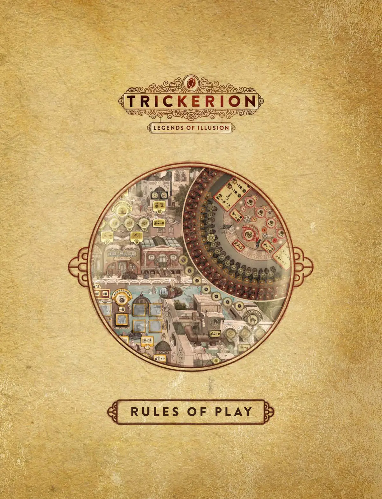
<figcaption>原版规则书 · 第 1 页（点击图片放大）</figcaption>
</figure>

<details class="mt-fold">
<summary>📝 第 1 页 AI 机翻对照（点击展开）</summary>
<div class="mt-body"><h2>游戏规则</h2></div>
</details>

<figure>
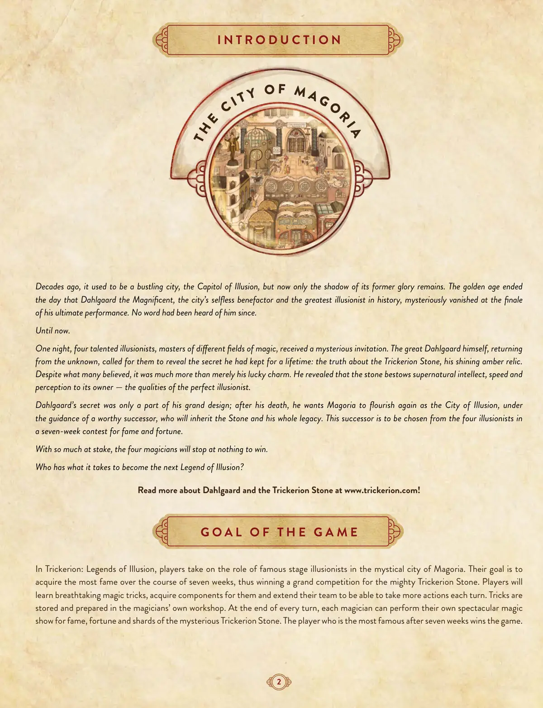
<figcaption>原版规则书 · 第 2 页（点击图片放大）</figcaption>
</figure>

<details class="mt-fold">
<summary>📝 第 2 页 AI 机翻对照（点击展开）</summary>
<div class="mt-body"><h2>引言</h2>

<p>几十年前，这里曾是一座繁华的城市，幻象之都（Capitol of Illusion），但现在只剩下昔日荣光的影子。黄金时代终结于那一天——伟大的达加德（Dahlgaard the Magnificent），这位无私的捐助者和历史上最伟大的幻术师，在他终极表演的神秘失踪。从那以后，再也没有他的任何消息。</p>

<p>直到现在。</p>

<p>一天晚上，四位才华横溢的幻术师，不同魔法领域的大师，收到了一封神秘的邀请。伟大的达加德本人，从未知之地归来，召唤他们揭示他一生保守的秘密：关于他那闪耀的琥珀圣物——诡计石（Trickerion Stone）的真相。</p>

<p>尽管许多人相信它，但它远不止是他的幸运符。他揭示这块石头赋予其所有者超凡的智力、速度和感知力——完美幻术师的品质。</p>

<p>达加德的秘密只是他宏伟计划的一部分；在他死后，他希望玛戈利亚（Magoria）能在一位值得继承者的指导下再次繁荣，成为幻象之城，这位继承者将继承石头和他所有的遗产。这位继承者将从四位幻术师中选出，通过为期七周的竞赛来决定谁能获得名声和财富。</p>

<p>如此高的赌注下，四位魔术师将不惜一切代价去赢。</p>

<p>谁能成为下一个幻象传奇？</p>

<p>更多关于达加德和诡计石的信息，请访问 www.trickerion.com！</p>

<h2>游戏目标</h2>

<p>在《诡计石：幻象传奇》（Trickerion: Legends of Illusion）中，玩家扮演神秘城市玛戈利亚（Magoria）的著名舞台幻术师。他们的目标是在七周内获得最多的名声，从而赢得强大的诡计石的盛大竞赛。玩家将学习令人惊叹的魔术技巧，获取这些技巧所需的组件，并扩展他们的团队，以便每回合能执行更多行动。技巧被存储和准备在魔术师自己的工作室中。每回合结束时，每位魔术师可以表演自己的壮观魔术秀，以获得名声、财富和神秘的诡计石碎片。七周后，最著名的玩家赢得游戏。</p>

<p>玛</p>

<p>戈</p>

<p>利</p>

<p>亚</p>

<p>之</p>

<p>城</p></div>
</details>

<figure>
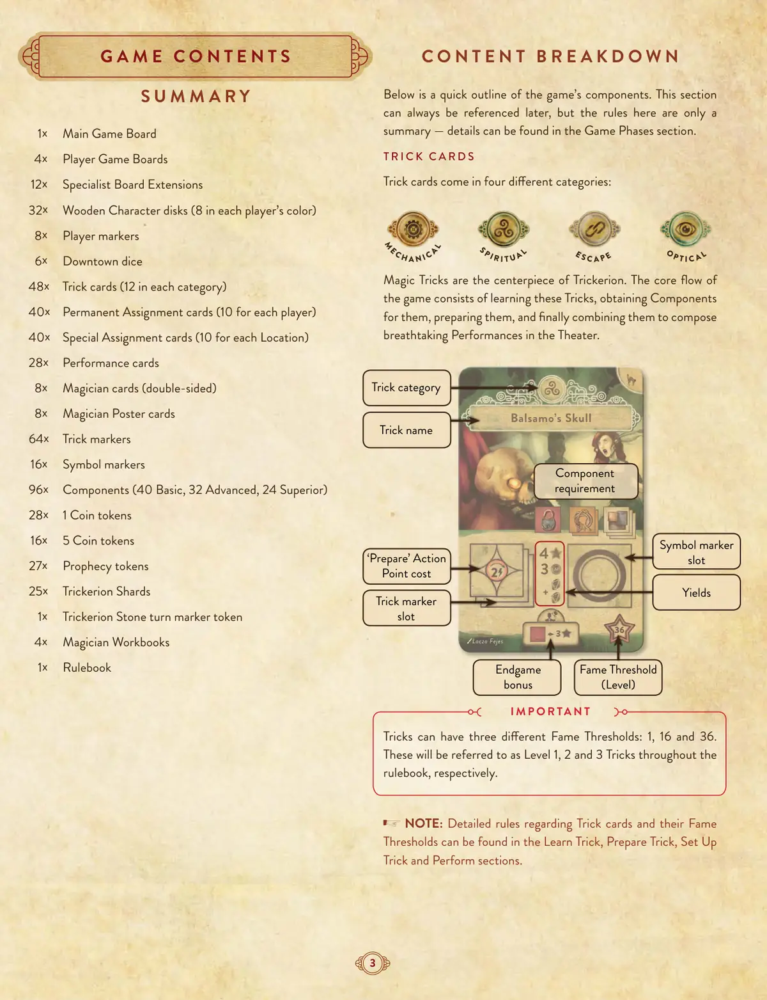
<figcaption>原版规则书 · 第 3 页（点击图片放大）</figcaption>
</figure>

<details class="mt-fold">
<summary>📝 第 3 页 AI 机翻对照（点击展开）</summary>
<div class="mt-body"><p>M</p>

<p>E</p>

<p>C</p>

<p>H</p>

<p>A</p>

<p>N</p>

<p>I</p>

<p>C</p>

<p>A</p>

<p>L</p>

<p>S</p>

<p>P</p>

<p>I</p>

<p>R</p>

<p>I</p>

<p>T</p>

<p>U</p>

<p>A</p>

<p>L</p>

<p>E</p>

<p>S</p>

<p>C</p>

<p>A</p>

<p>P</p>

<p>E</p>

<p>O</p>

<p>P</p>

<p>T</p>

<p>I</p>

<p>C</p>

<p>A</p>

<p>L</p>

<p>Lacza Fejes</p>

<p>Balsamo的头骨</p>

<p>Lacza Fejes</p>

<p>Balsamo的头骨</p>

<p>声望阈值</p>

<p>(等级)</p>

<p>游戏结束</p>

<p>奖励</p>

<p>产出</p>

<p>墩标记槽</p>

<p>符号标记槽</p>

<p>"准备"行动</p>

<p>点数成本</p>

<p>组件需求</p>

<p>戏法名称</p>

<p>戏法类别</p>

<h2>游戏内容</h2>

<h2>概览</h2>

<p>1x 主游戏版图</p>

<p>4x 玩家游戏版图</p>

<p>12x 专家版图扩展</p>

<p>32x</p>

<p>木质角色圆盘（每种玩家颜色8个）</p>

<p>8x 玩家标记</p>

<p>6x 市中心骰子</p>

<p>48x 戏法卡牌（每个类别12张）</p>

<p>40x 永久任务卡牌（每位玩家10张）</p>

<p>40x 特殊任务卡牌（每个地点10张）</p>

<p>28x 表演卡牌</p>

<p>8x 魔术师卡牌（双面）</p>

<p>8x 魔术师海报卡牌</p>

<p>64x 戏法标记</p>

<p>16x 符号标记</p>

<p>96x 组件（40个基础，32个进阶，24个高级）</p>

<p>28x 1枚硬币指示物</p>

<p>16x</p>

<p>5枚硬币指示物</p>

<p>27x 预言指示物</p>

<p>25x Trickerion碎片</p>

<p>1x Trickerion石回合标记指示物</p>

<p>4x 魔术师工作手册</p>

<p>1x 规则书</p>

<h2>组件分解</h2>

<p>以下是游戏组件的快速概述。本部分</p>

<p>可以随时参考，但这里的规则仅是</p>

<p>摘要—详细信息可在游戏阶段部分找到。</p>

<h2>戏法卡牌</h2>

<p>戏法卡牌分为四个不同类别：</p>

<p>魔术戏法是Trickerion的核心。游戏的核心流程</p>

<p>包括学习这些戏法，获取它们的组件，</p>

<p>准备它们，最后将它们组合起来在剧院中</p>

<p>创作令人惊叹的表演。</p>

<h2>重要</h2>

<p>戏法可以有三种不同的声望阈值：1、16和36。</p>

<p>在整本规则书中，这些将分别被称为1级、2级和3级戏法。</p>

<p>注意：关于戏法卡牌及其声望阈值的详细规则</p>

<p>可以在学习戏法、准备戏法、设置戏法和表演部分找到。</p></div>
</details>

<figure>
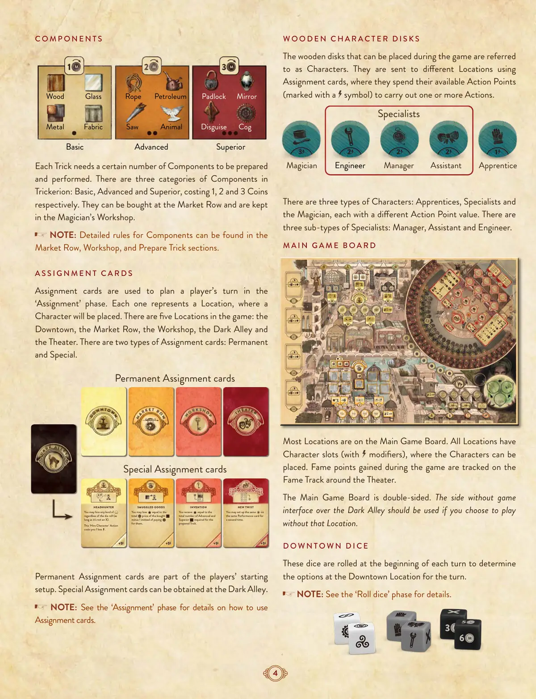
<figcaption>原版规则书 · 第 4 页（点击图片放大）</figcaption>
</figure>

<details class="mt-fold">
<summary>📝 第 4 页 AI 机翻对照（点击展开）</summary>
<div class="mt-body"><p>木材</p>

<p>绳索</p>

<p>挂锁</p>

<p>金属</p>

<p>基础</p>

<p>高级</p>

<p>卓越</p>

<p>锯子</p>

<p>伪装</p>

<p>玻璃</p>

<p>石油</p>

<p>镜子</p>

<p>织物</p>

<p>动物</p>

<p>齿轮</p>

<p>专家</p>

<p>魔术师</p>

<p>工程师</p>

<p>经理</p>

<p>助手</p>

<p>学徒</p>

<p>永久任务卡</p>

<p>特殊任务卡</p>

<h2>猎头</h2>

<p>你可以雇佣任何类型的</p>

<p>，而无需考虑骰子点数（只要</p>

<p>不是X）。</p>

<p>这个"雇佣角色"行动</p>

<p>使你少花费1个 。</p>

<h2>猎头</h2>

<p>你可以雇佣任何类型的</p>

<p>，而无需考虑骰子点数（只要</p>

<p>不是X）。</p>

<p>这个"雇佣角色"行动</p>

<p>使你少花费1个 。</p>

<h2>新花样</h2>

<p>你可以在同一张</p>

<p>表演卡上</p>

<p>设置相同的</p>

<p>，第二次。</p>

<h2>新花样</h2>

<p>你可以在同一张</p>

<p>表演卡上</p>

<p>设置相同的</p>

<p>，第二次。</p>

<h2>走私货</h2>

<p>你可以失去</p>

<p>等于所购买的</p>

<p>总价减1，</p>

<p>而不是支付它们的价格。</p>

<h2>走私货</h2>

<p>你可以失去</p>

<p>等于所购买的</p>

<p>总价减1，</p>

<p>而不是支付它们的价格。</p>

<h2>发明</h2>

<p>你获得</p>

<p>等于</p>

<p>准备好的</p>

<p>所需的</p>

<p>高级和卓越</p>

<p>组件的总数。</p>

<h2>发明</h2>

<p>你获得</p>

<p>等于</p>

<p>准备好的</p>

<p>所需的</p>

<p>高级和卓越</p>

<p>组件的总数。</p>

<h2>组 件</h2>

<p>每个都需要一定数量的组件才能准备和表演。</p>

<p>在Trickerion中有三种组件类别：基础、高级和卓越，分别花费1、2和3个金币。</p>

<p>它们可以在市场行购买，并保存在魔术师的工坊中。</p>

<p>注意：关于组件的详细规则可以在市场行、工坊和准备技巧部分找到。</p>

<h2>任 务 卡</h2>

<p>任务卡用于在"任务"阶段规划玩家的回合。</p>

<p>每张卡代表一个位置，角色将被放置在那里。</p>

<p>游戏中有五个位置：市中心、市场行、工坊、暗巷和剧院。</p>

<p>有两种类型的任务卡：永久任务卡和特殊任务卡。</p>

<p>永久任务卡是玩家初始设置的一部分。</p>

<p>特殊任务卡可以在暗巷获得。</p>

<p>注意：关于如何使用任务卡的详细信息，请参见"任务"阶段。</p>

<h2>木 质 角 色 棋 盘</h2>

<p>游戏中可以放置的木质圆盘被称为角色。</p>

<p>它们通过任务卡被发送到不同的位置，在那里它们花费可用的行动点（标记有 符号）来执行一个或多个行动。</p>

<p>有三种类型的角色：学徒、专家和魔术师，每种都有不同的行动点价值。</p>

<p>专家有三种子类型：经理、助手和工程师。</p>

<h2>主 游 戏 版 图</h2>

<p>大多数位置都在主游戏版图上。</p>

<p>所有位置都有角色槽位（带有 修饰符），角色可以放置在那里。</p>

<p>游戏过程中获得的声望点将在版图上追踪。</p>

<p>环绕剧院的名望轨道。</p>

<p>游戏主版图是双面的。如果你选择不使用那个地点，则应使用暗巷上方没有游戏界面的那一面。</p>

<h2>市区骰子</h2>

<p>这些骰子在每回合开始时投掷，以确定该回合市区地点的选项。</p>

<p>注意：详情请参见"投掷骰子"阶段。</p></div>
</details>

<figure>
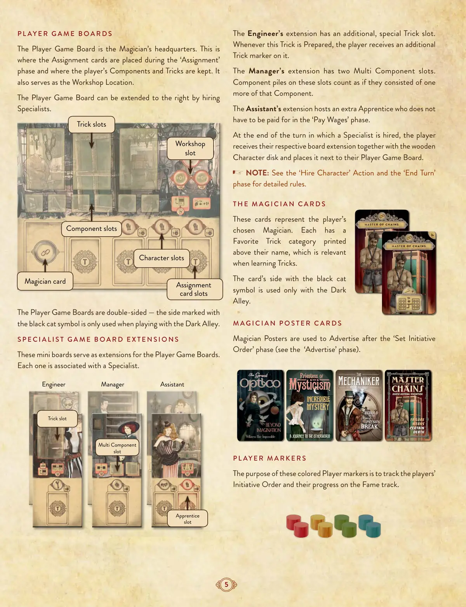
<figcaption>原版规则书 · 第 5 页（点击图片放大）</figcaption>
</figure>

<details class="mt-fold">
<summary>📝 第 5 页 AI 机翻对照（点击展开）</summary>
<div class="mt-body"><p>工程师</p>

<p>经理</p>

<p>助手</p>

<p>组件槽</p>

<p>角色槽</p>

<p>指派</p>

<p>卡牌槽</p>

<p>魔术师卡牌</p>

<p>工坊</p>

<p>槽</p>

<p>戏法槽</p>

<p>戏法槽</p>

<p>学徒</p>

<p>槽</p>

<p>多组件槽</p>

<h2>玩家游戏版图</h2>

<p>玩家游戏版图是魔术师的总部。这是在"指派"阶段放置指派卡牌的地方，也是存放玩家组件和戏法的地方。它也作为工坊位置使用。</p>

<p>玩家游戏版图可以通过雇佣专家向右扩展。</p>

<p>玩家游戏版图是双面的——带有黑猫符号的一面仅在玩暗巷时使用。</p>

<h2>专家游戏版图扩展</h2>

<p>这些小板作为玩家游戏版图的扩展。每个都与一位专家相关联。</p>

<p>工程师的扩展有一个额外的特殊戏法槽。每当这个戏法被准备时，玩家会获得一个额外的戏法指示物。</p>

<p>经理的扩展有两个多组件槽。这些槽上的组件堆被视为比实际多一个该组件。</p>

<p>助手的扩展有一个额外的学徒，在"支付工资"阶段无需支付费用。</p>

<p>在雇佣专家的回合结束时，玩家获得相应的版图扩展以及木质角色圆盘，并将其放置在玩家游戏版图旁边。</p>

<p>注意：有关详细规则，请参见"雇佣角色"行动和"回合结束"阶段。</p>

<h2>魔术师卡牌</h2>

<p>这些卡牌代表玩家选择的魔术师。每张卡牌在名字上方印有喜爱的戏法类别，这在学习戏法时很重要。</p>

<p>带有黑猫符号的卡牌一面仅在暗巷中使用。</p>

<h2>魔术师海报卡牌</h2>

<p>魔术师海报用于在"设置行动顺序"阶段之后进行宣传（参见"宣传"阶段）。</p>

<h2>玩家指示物</h2>

<p>这些彩色玩家指示物的目的是追踪玩家的行动顺序和在声望轨道上的进展。</p></div>
</details>

<figure>
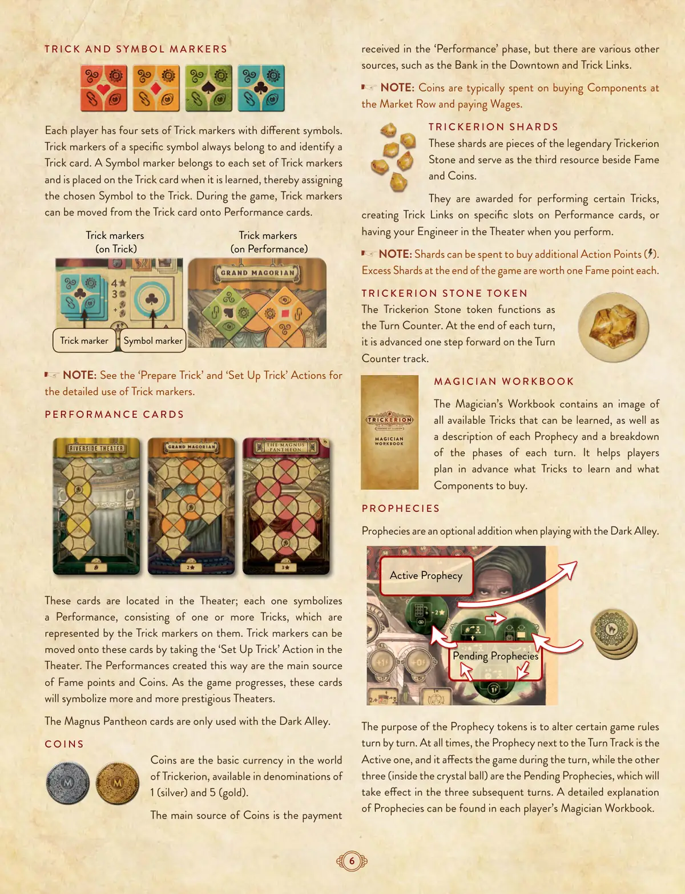
<figcaption>原版规则书 · 第 6 页（点击图片放大）</figcaption>
</figure>

<details class="mt-fold">
<summary>📝 第 6 页 AI 机翻对照（点击展开）</summary>
<div class="mt-body"><p>戏法标记</p>

<p>（在戏法上）</p>

<p>戏法标记</p>

<p>（在表演上）</p>

<p>活跃预言</p>

<p>待处理预言</p>

<p>戏法标记</p>

<p>符号标记</p>

<h2>魔 术 师</h2>

<h2>工 作 簿</h2>

<h2>戏 法 与 符 号 标 记</h2>

<p>每位玩家有四组带有不同符号的戏法标记。特定符号的戏法标记始终属于并标识一张戏法卡。每组戏法标记都有一个符号标记，当戏法被学习时，将其放置在戏法卡上，从而为该戏法分配所选定的符号。在游戏过程中，戏法标记可以从戏法卡移动到表演卡上。</p>

<p>注意：有关戏法标记的详细使用方法，请参见"准备戏法"和"设置戏法"行动。</p>

<h2>表 演 卡</h2>

<p>这些卡牌位于剧院中；每张卡牌代表一场表演，由一个或多个戏法组成，这些戏法由卡牌上的戏法标记表示。通过在剧院中执行"设置戏法"行动，可以将戏法标记移动到这些卡牌上。以此方式创建的表演是声望点和金币的主要来源。随着游戏的进行，这些卡牌将代表越来越高级的剧院。</p>

<p>Magnus Pantheon卡牌仅与暗巷一起使用。</p>

<h2>金 币</h2>

<p>金币是Trickerion世界中的基础货币，有1（银币）和5（金币）两种面值。</p>

<p>金币的主要来源是在"表演"阶段获得的报酬，但也有其他各种来源，例如市中心的钱庄和戏法连接。</p>

<p>注意：金币通常用于在市场行购买组件和支付工资。</p>

<h2>Trickerion碎片</h2>

<p>这些碎片是传说中的Trickerion石的一部分，是与声望和金币并列的第三种资源。</p>

<p>它们因执行特定戏法、在表演卡上的特定槽位创建戏法连接，或在表演时让你的工程师在剧院而获得。</p>

<p>注意：碎片可用于购买额外的行动点（）。游戏结束时多余的碎片每个价值1点声望。</p>

<h2>Trickerion石指示物</h2>

<p>Trickerion石指示物用作回合计数器。在每个回合结束时，它在回合计数器轨道上向前推进一步。</p>

<h2>魔术师工作簿</h2>

<p>魔术师工作簿包含所有可学习戏法的图像，以及每条预言的描述和每个阶段的分解。它帮助玩家提前计划学习哪些戏法和购买哪些组件。</p>

<h2>预 言</h2>

<p>预言是与暗巷一起游戏时的可选补充。预言标记的目的是逐轮改变某些游戏规则。始终位于回合轨道旁边的预言是当前生效的预言。</p>

<p>激活一张，它会在当前回合影响游戏，而另外三张（在水晶球内）是待定预言，它们将在接下来的三个回合生效。关于预言的详细解释可以在每位玩家的巫师工作簿中找到。</p></div>
</details>

<figure>
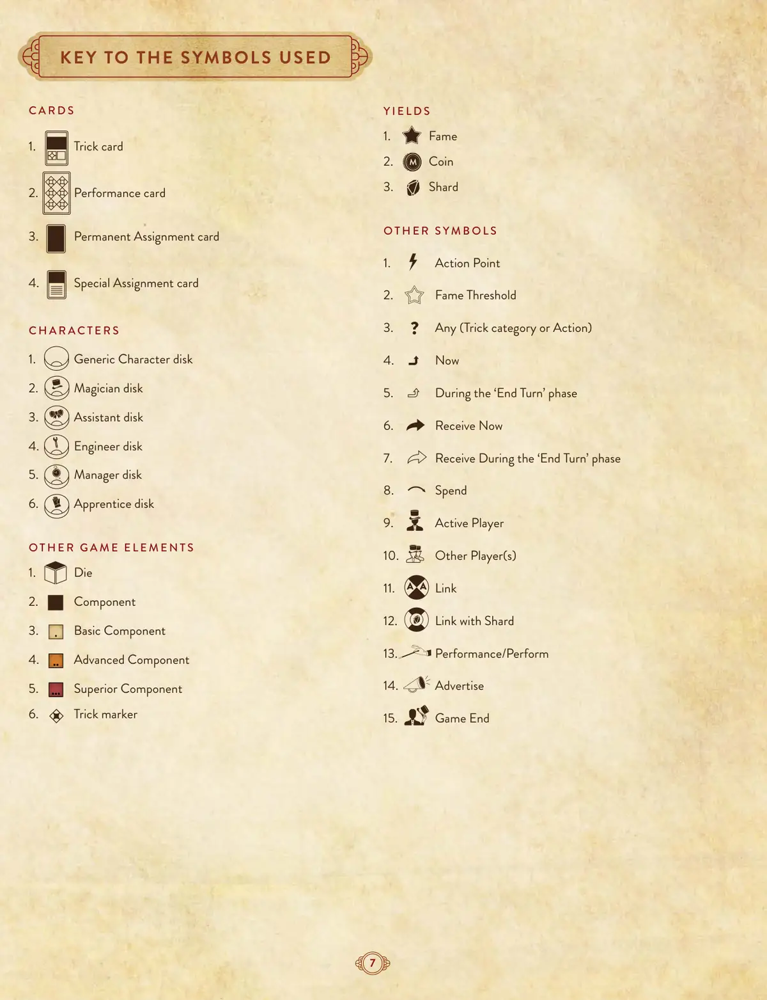
<figcaption>原版规则书 · 第 7 页（点击图片放大）</figcaption>
</figure>

<details class="mt-fold">
<summary>📝 第 7 页 AI 机翻对照（点击展开）</summary>
<div class="mt-body"><h2>产出</h2>

<p>1.</p>

<p>声望</p>

<p>2.</p>

<p>金币</p>

<p>3.</p>

<p>碎片</p>

<h2>其他符号</h2>

<p>1.</p>

<p>行动点</p>

<p>2.</p>

<p>声望阈值</p>

<p>3.</p>

<p>任意（墩类别或行动）</p>

<p>4.</p>

<p>立即</p>

<p>5.</p>

<p>在"结束回合"阶段期间</p>

<p>6.</p>

<p>立即获得</p>

<p>7.</p>

<p>在"结束回合"阶段期间获得</p>

<p>8.</p>

<p>花费</p>

<p>9.</p>

<p>活跃玩家</p>

<p>10.</p>

<p>其他玩家</p>

<p>11.</p>

<p>连接</p>

<p>12.</p>

<p>与碎片连接</p>

<p>13.</p>

<p>表演/执行</p>

<p>14.</p>

<p>宣传</p>

<p>15.</p>

<p>游戏结束</p>

<h2>使用符号的说明</h2>

<h2>卡牌</h2>

<p>1.</p>

<p>墩卡牌</p>

<p>2.</p>

<p>表演卡牌</p>

<p>3.</p>

<p>永久分配卡牌</p>

<p>4.</p>

<p>特殊分配卡牌</p>

<h2>角色</h2>

<p>1.</p>

<p>通用角色圆盘</p>

<p>2.</p>

<p>魔术师圆盘</p>

<p>3.</p>

<p>助手圆盘</p>

<p>4.</p>

<p>工程师圆盘</p>

<p>5.</p>

<p>经理圆盘</p>

<p>6.</p>

<p>学徒圆盘</p>

<h2>其他游戏元素</h2>

<p>1.</p>

<p>骰子</p>

<p>2.</p>

<p>组件</p>

<p>3.</p>

<p>基础组件</p>

<p>4.</p>

<p>高级组件</p>

<p>5.</p>

<p>高级组件</p>

<p>6.</p>

<p>墩标记物</p></div>
</details>

<figure>
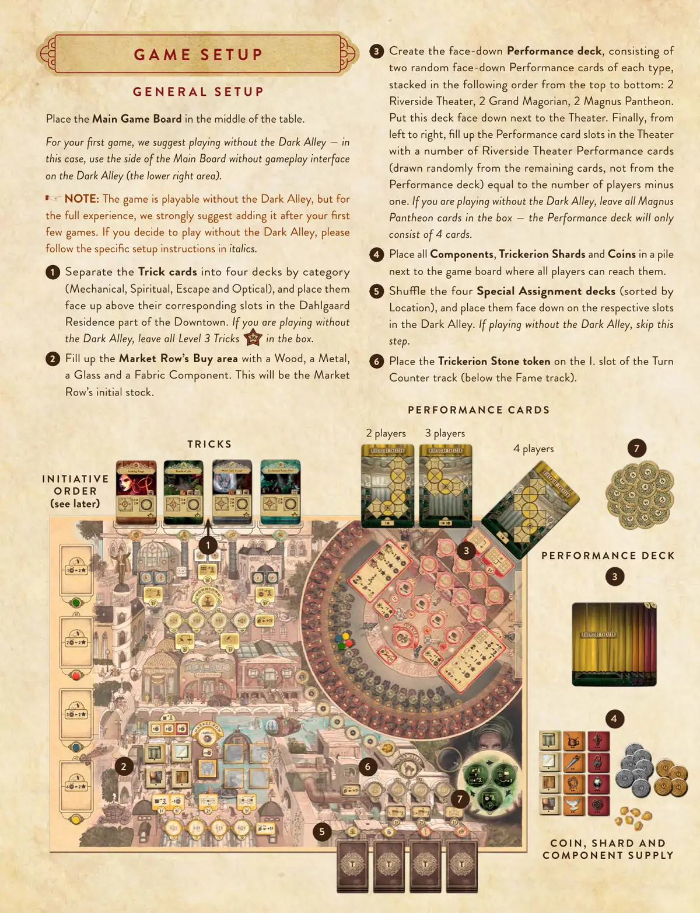
<figcaption>原版规则书 · 第 8 页（点击图片放大）</figcaption>
</figure>

<details class="mt-fold">
<summary>📝 第 8 页 AI 机翻对照（点击展开）</summary>
<div class="mt-body"><h2>骗局</h2>

<h2>表演卡牌</h2>

<h2>表演牌库</h2>

<p>2名玩家</p>

<p>3名玩家</p>

<p>4名玩家</p>

<h2>先手</h2>

<h2>顺序</h2>

<p>（见后文）</p>

<h2>金币、碎片和</h2>

<h2>组件供应</h2>

<h2>游戏设置</h2>

<h2>通用设置</h2>

<p>将主游戏版图放在桌子中央。</p>

<p>对于你的第一局游戏，我们建议不使用黑暗小巷——在这种情况下，使用主版图上没有黑暗小巷游戏界面的那一面（右下区域）。</p>

<p>注意：游戏可以在没有黑暗小巷的情况下进行，但为了完整体验，我们强烈建议在最初的几局游戏后添加它。如果你决定不使用黑暗小巷，请遵循斜体中的特定设置说明。</p>

<p>1	 按类别（机械、精神、逃脱和光学）将骗局卡分成四副牌组，并将它们面朝上放在市中心达加德住宅部分对应槽位的上方。如果你不使用黑暗小巷，将所有3级骗局卡留在盒子里。</p>

<p>2	 用一个木材、一个金属、一个玻璃和一个织物组件填满市场行的购买区域。这将作为市场行的初始库存。</p>

<p>3	 创建面朝下的表演牌库，包含每种类型的两张随机面朝下的表演卡，按从上到下的顺序堆叠：2张河岸剧院，2张大马格orian，2张马格纳斯万神殿。将这副牌面朝下放在剧院旁边。最后，从左到右，用数量等于玩家数量减一的河岸剧院表演卡（从剩余卡牌中随机抽取，不是从表演牌库中）填满剧院中的表演卡槽位。如果你不使用黑暗小巷，将所有马格纳斯万神殿卡留在盒子里——表演牌库将只包含4张卡。</p>

<p>4	 将所有组件、Trickerion碎片和金币放在一堆，放在游戏版图旁边，所有玩家都能拿到。</p>

<p>5	 洗混四副特殊任务牌组（按位置分类），并将它们面朝下放在黑暗小巷中相应的槽位上。如果不使用黑暗小巷，跳过此步骤。</p>

<p>6	 将Trickerion石指示物放在回合计数器轨道（声望轨道下方）的I槽位上。</p></div>
</details>

<figure>
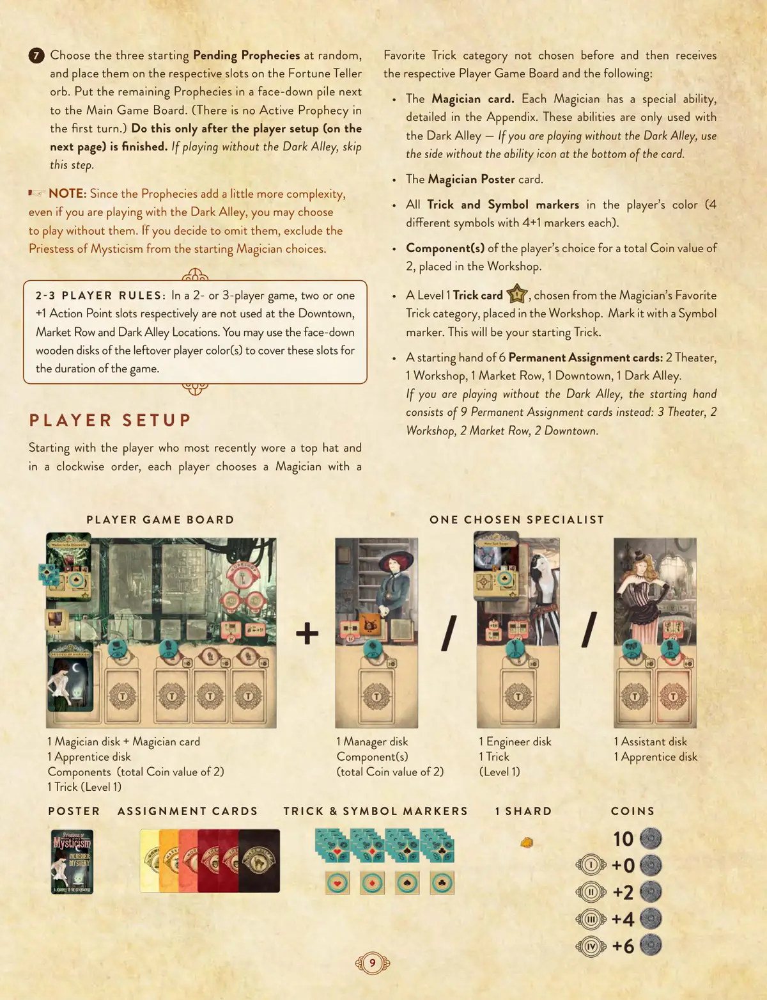
<figcaption>原版规则书 · 第 9 页（点击图片放大）</figcaption>
</figure>

<details class="mt-fold">
<summary>📝 第 9 页 AI 机翻对照（点击展开）</summary>
<div class="mt-body"><h2>玩家游戏版图</h2>

<h2>指派卡牌</h2>

<h2>戏法与符号标记</h2>

<h2>1个碎片</h2>

<h2>金币</h2>

<h2>海报</h2>

<h2>1位选定的专家</h2>

<p>1个魔术师圆盘 + 魔术师卡牌</p>

<p>1个学徒圆盘</p>

<p>组件（总金币价值为2）</p>

<p>1个戏法（1级）</p>

<p>1个经理圆盘</p>

<p>组件</p>

<p>（总金币价值为2）</p>

<p>1个工程师圆盘</p>

<p>1个戏法</p>

<p>（1级）</p>

<p>1个助手圆盘</p>

<p>1个学徒圆盘</p>

<p>7 随机选择三个起始待定预言，并将它们放置在占卜师球体上的相应槽位中。将剩余的预言牌面朝下放在主游戏版图旁边。（第一回合没有活跃预言。）仅在玩家设置（在下一页）完成后执行此步骤。如果不玩黑暗小巷，则跳过此步骤。</p>

<p>注意：由于预言会增加一些复杂性，即使你使用黑暗小巷扩展，你也可以选择不使用它们。如果你决定省略它们，则从起始魔术师选择中排除神秘主义女祭司。</p>

<p>2-3人游戏规则：在2人或3人游戏中，市中心、市场行和黑暗小巷位置分别有两个或一个+1行动点槽位未被使用。你可以使用剩余玩家颜色（们）的面朝下的木制圆盘来覆盖这些槽位，并在游戏期间保持覆盖。</p>

<h2>玩家设置</h2>

<p>从最近戴过高帽的玩家开始，按顺时针方向，每位玩家选择一个喜爱的戏法类别尚未被选过的魔术师，然后获得相应的玩家游戏版图和以下物品：</p>

<p>• 魔术师卡牌。每位魔术师都有一种特殊能力，详见附录。这些能力仅在黑暗小巷扩展中使用——如果你不使用黑暗小巷扩展，请使用卡牌底部没有能力图标的那一面。</p>

<p>• 魔术师海报卡牌。</p>

<p>• 玩家颜色的所有戏法和符号标记（4种不同符号，每种4+1个标记）。</p>

<p>• 玩家选择的组件，总金币价值为2，放置在工坊中。</p>

<p>• 从魔术师的喜爱戏法类别中选出的1级戏法卡牌，放置在工坊中。用符号标记它。这将是你起始的戏法。</p>

<p>• 起始手牌包含6张永久指派卡牌：2张剧院，1张工坊，1张市场行，1张市中心，1张黑暗小巷。</p>

<p>如果你不使用黑暗小巷扩展，起始手牌则包含9张永久指派卡牌：3张剧院，2张工坊，2张市场行，2张市中心。</p></div>
</details>

<figure>
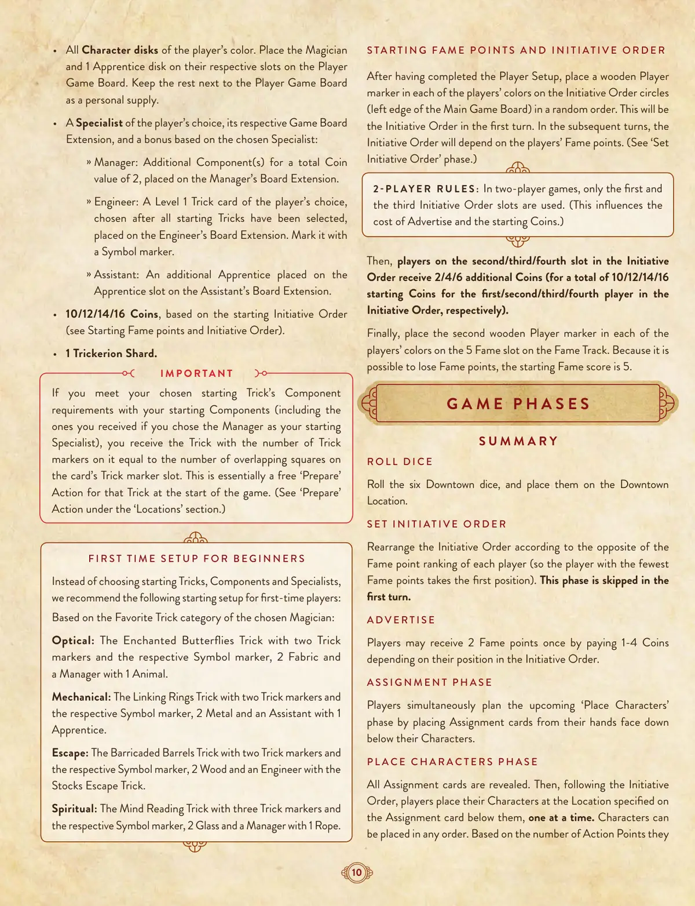
<figcaption>原版规则书 · 第 10 页（点击图片放大）</figcaption>
</figure>

<details class="mt-fold">
<summary>📝 第 10 页 AI 机翻对照（点击展开）</summary>
<div class="mt-body"><p>•	 玩家颜色的所有角色圆盘。将魔术师和1个学徒圆盘放置在玩家游戏板上各自的槽位上。其余的放在玩家游戏板旁边作为个人储备。</p>

<p>•	 玩家选择的一位专家，相应的游戏板扩展，以及基于所选专家的奖励：</p>

<p>» 经理：总价值为2金币的额外组件，放置在经理的游戏板扩展上。</p>

<p>» 工程师：玩家选择的一张1级技巧卡，在所有起始技巧被选择后选择，放置在工程师的游戏板扩展上。用符号标记器标记它。</p>

<p>» 助手：一个额外的学徒，放置在助手游戏板扩展上的学徒槽位。</p>

<p>•	 10/12/14/16金币，基于起始行动顺序（参见起始声望点和行动顺序）。</p>

<p>•	 1个Trickerion碎片。</p>

<h2>重 要</h2>

<p>如果你用你的起始组件（包括如果你选择经理作为起始专家时获得的组件）满足了你选择的起始技巧的组件要求，你将获得带有技巧标记的技巧，其数量等于卡牌技巧标记槽位上重叠方格的数量。这本质上是在游戏开始时对该技巧的一次免费"准备"行动。（参见"位置"部分下的"准备"行动。）</p>

<h2>新手首次设置</h2>

<p>我们建议首次玩家不要选择起始技巧、组件和专家，而是采用以下起始设置：</p>

<p>基于所选魔术师的喜爱技巧类别：</p>

<p>光学：带有两个技巧标记和相应符号标记的《被施法的蝴蝶》技巧，2块布料，以及带有1个动物的经理。</p>

<p>机械：带有两个技巧标记和相应符号标记的《连环》技巧，2块金属，以及带有1个学徒的助手。</p>

<p>逃脱：带有两个技巧标记和相应符号标记的《封锁的桶》技巧，2块木材，以及带有《股票逃脱》技巧的工程师。</p>

<p>灵性：带有三个技巧标记和相应符号标记的《读心术》技巧，2块玻璃，以及带有1根绳子的经理。</p>

<h2>起始声望点和行动顺序</h2>

<p>完成玩家设置后，以随机顺序将玩家颜色的木质玩家标记放置在行动顺序圆圈上（主游戏板左边缘）。这将是第一回合的行动顺序。在后续回合中，行动顺序将取决于玩家的声望点。（参见"设置行动顺序"阶段。）</p>

<p>2人游戏规则：在两人游戏中，只使用第一和第三行动顺序槽位。（这会影响广告的成本和起始金币。）</p>

<p>然后，行动顺序中第二/第三/第四位的玩家分别获得 2/4/6 个额外金币（行动顺序中第一/第二/第三/第四位玩家起始金币总数分别为 10/12/14/16）。</p>

<p>最后，将每位玩家颜色的第二个木质玩家指示物放在声望轨道上的 5 声望位。因为有可能失去声望点，所以起始声望分数为 5。</p>

<h2>游戏阶段</h2>

<h2>概述</h2>

<h2>掷骰子</h2>

<p>掷六个市中心骰子，并将它们放在市中心位置。</p>

<h2>设定行动顺序</h2>

<p>根据每位玩家的声望点排名的相反顺序重新排列行动顺序（因此声望点最少的玩家占据第一位）。第一回合跳过此阶段。</p>

<h2>广告</h2>

<p>玩家可以通过支付 1-4 个金币（根据其在行动顺序中的位置）来获得 2 个声望点，每位玩家只能获得一次。</p>

<h2>分配阶段</h2>

<p>玩家通过将手牌中的分配卡牌面朝下放在其角色下方，同时计划即将到来的"放置角色"阶段。</p>

<h2>放置角色阶段</h2>

<p>所有分配卡牌被揭示。然后，按照行动顺序，玩家将他们的角色放在其下方的分配卡牌上指定的位置，一次放置一个。角色可以按任意顺序放置。根据他们拥有的行动点数量</p></div>
</details>

<figure>
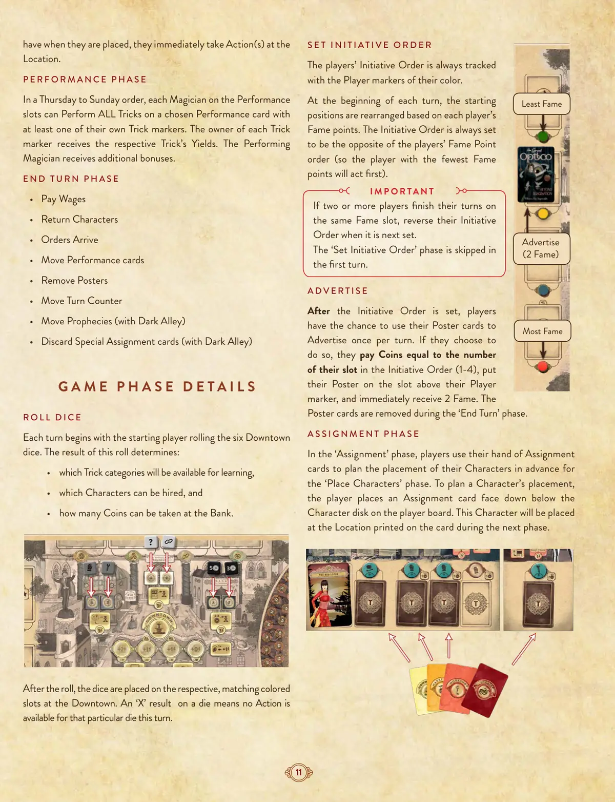
<figcaption>原版规则书 · 第 11 页（点击图片放大）</figcaption>
</figure>

<details class="mt-fold">
<summary>📝 第 11 页 AI 机翻对照（点击展开）</summary>
<div class="mt-body"><p>宣传</p>

<p>（2声望）</p>

<p>最高声望</p>

<p>最低声望</p>

<p>当它们被放置时，它们立即在位置上执行行动。</p>

<h2>表演阶段</h2>

<p>按周四到周日的顺序，表演槽位上的每个魔术师可以使用至少一个他们自己的技巧标记，在选定的表演卡牌上表演所有技巧。每个技巧标记的所有者获得相应技巧的收益。表演的魔术师获得额外奖励。</p>

<h2>回合结束阶段</h2>

<p>• 支付工资</p>

<p>• 返还角色</p>

<p>• 订单到达</p>

<p>• 移动表演卡牌</p>

<p>• 移除海报</p>

<p>• 移动回合计数器</p>

<p>• 移动预言（与暗巷一起）</p>

<p>• 弃置特殊任务卡牌（与暗巷一起）</p>

<h2>游戏阶段详情</h2>

<h2>掷骰子</h2>

<p>每个回合开始时，起始玩家掷六个市中心骰子。这次掷骰的结果决定了：</p>

<p>• 哪些技巧类别可供学习，</p>

<p>• 哪些角色可以被雇佣，以及</p>

<p>• 银行可以领取多少金币。</p>

<p>掷骰后，骰子被放置在市中心的相应匹配颜色的槽位上。骰子上的"X"结果表示该回合中该特定骰子没有可用的行动。</p>

<h2>设置行动顺序</h2>

<p>玩家的行动顺序始终通过他们颜色的玩家标记来追踪。</p>

<p>在每个回合开始时，起始位置根据每个玩家的声望点数重新排列。行动顺序始终设置为与玩家的声望点数顺序相反（因此声望点数最少的玩家将首先行动）。</p>

<h2>重要提示</h2>

<p>如果两个或更多玩家在同一声望槽位结束他们的回合，则在下次设置行动顺序时，反转他们的行动顺序。</p>

<p>在第一个回合中，"设置行动顺序"阶段被跳过。</p>

<h2>宣传</h2>

<p>设置行动顺序后，玩家有机会每回合使用一次他们的海报卡牌进行宣传。如果他们选择这样做，他们支付等于他们在行动顺序中槽位数（1-4）的金币，将他们的海报放在其玩家标记上方的槽位上，并立即获得2点声望。海报卡牌在"回合结束"阶段被移除。</p>

<h2>任务阶段</h2>

<p>在"任务"阶段，玩家使用他们手中的任务卡牌来提前计划他们在"放置角色"阶段的角色放置。为了规划角色的放置，玩家将一张任务卡牌面朝下放在玩家板上角色圆盘下方。这个角色将在下一阶段被放置在卡牌上印制的位置。</p></div>
</details>

<figure>
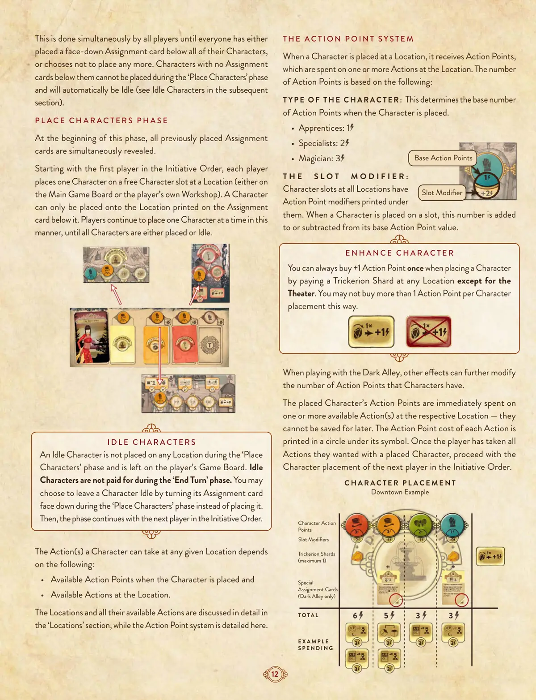
<figcaption>原版规则书 · 第 12 页（点击图片放大）</figcaption>
</figure>

<details class="mt-fold">
<summary>📝 第 12 页 AI 机翻对照（点击展开）</summary>
<div class="mt-body"><h2>角色放置</h2>

<p>市中心示例</p>

<p>幻术碎片</p>

<p>（最多1个）</p>

<p>角色行动点</p>

<p>槽位修正值</p>

<h2>总计</h2>

<h2>示例</h2>

<h2>消耗</h2>

<p>特殊</p>

<p>任务卡</p>

<p>（仅限暗巷）</p>

<p>槽位修正值</p>

<p>基础行动点</p>

<p>所有玩家同时进行此操作，直到每位玩家要么在其所有角色下方放置一张面朝下的任务卡，要么选择不再放置任何任务卡。没有任务卡在其下方的角色不能在"放置角色"阶段被放置，并将自动变为闲置状态（参见后续的"闲置角色"部分）。</p>

<h2>放置角色阶段</h2>

<p>在此阶段开始时，所有先前放置的任务卡同时被揭示。</p>

<p>从行动顺序中的第一位玩家开始，每位玩家将一个角色放置在某个地点（主游戏版图或玩家自己的工坊）的空闲角色槽位上。一个角色只能被放置在其下方任务卡上印刷的地点上。玩家继续以这种方式一次放置一个角色，直到所有角色都被放置或变为闲置状态。</p>

<h2>闲置角色</h2>

<p>闲置角色是在"放置角色"阶段没有被放置在任何地点的角色，留在玩家的游戏版图上。闲置角色在"结束回合"阶段不会获得报酬。您可以选择在"放置角色"阶段将其任务卡面朝下放置，而不是放置该角色，从而选择将角色闲置。然后，阶段继续进行到行动顺序中的下一位玩家。</p>

<p>角色在任何给定地点可以执行的行动取决于以下因素：</p>

<p>• 角色放置时可用的行动点，以及</p>

<p>• 该地点可用的行动。</p>

<p>地点及其所有可用行动在"地点"部分详细讨论，而行动点系统在此详细说明。</p>

<h2>行动点系统</h2>

<p>当角色被放置在某个地点时，它会获得行动点，这些行动点用于在该地点执行一个或多个行动。行动点的数量基于以下因素：</p>

<p>角色类型：这决定了角色放置时的基础行动点数量。</p>

<p>• 学徒：1</p>

<p>• 专家：2</p>

<p>• 魔术师：3</p>

<h2>槽位</h2>

<h2>修正值：</h2>

<p>所有地点的角色槽位下方都印刷有行动点修正值。当角色被放置在槽位上时，这个数字会被加到或从其基础行动点值中减去。</p>

<h2>增强角色</h2>

<p>您可以在任何地点（剧院除外）通过支付一个幻术碎片，在放置角色时购买+1行动点。您不得通过这种方式每次角色放置购买超过1个行动点。</p>

<p>当使用黑暗小巷时，其他效果可以进一步改变角色拥有的行动点数。</p>

<p>已放置角色的行动点会立即在相应地点用于一个或多个可用行动——它们不能留到以后使用。每个行动的行动点成本都印在其符号下方的圆圈中。一旦玩家使用已放置的角色完成了所有想要的行动，就按行动顺序进行下一位玩家的角色放置。</p></div>
</details>

<figure>
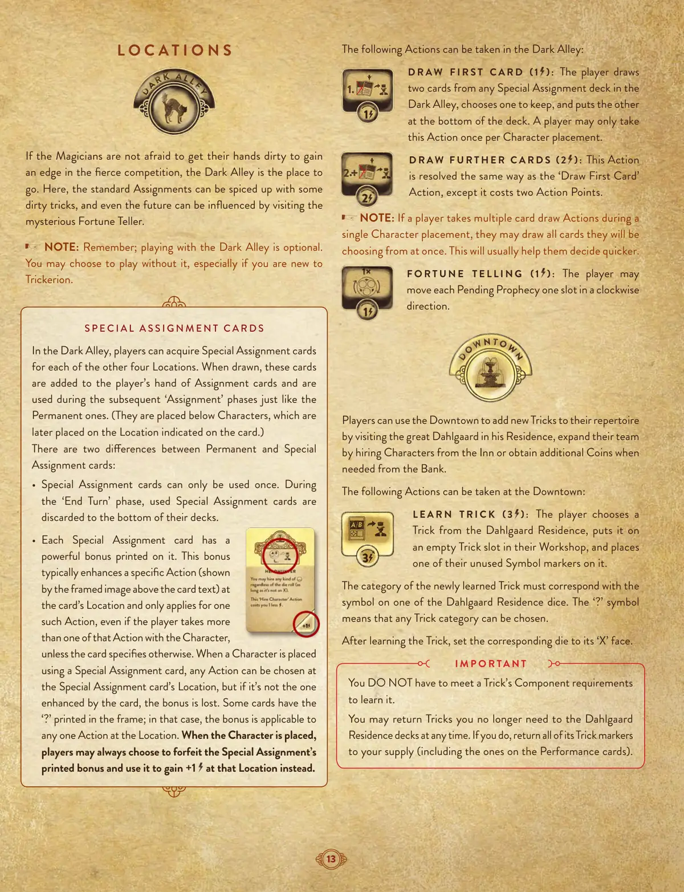
<figcaption>原版规则书 · 第 13 页（点击图片放大）</figcaption>
</figure>

<details class="mt-fold">
<summary>📝 第 13 页 AI 机翻对照（点击展开）</summary>
<div class="mt-body"><h2>地点</h2>

<p>如果魔术师们不害怕在激烈的竞争中为了获得优势而弄脏他们的手，那么黑暗小巷就是去的地方。在这里，常规任务可以通过一些肮脏的手段来增加趣味，甚至可以通过拜访神秘的占卜师来影响未来。</p>

<p>注意：请记住；使用黑暗小巷是可选的。你可以选择不使用它来游戏，特别是如果你是《Trickerion》的新手。</p>

<h2>特殊任务卡</h2>

<p>在黑暗小巷中，玩家可以为其他四个地点中的每一个获取特殊任务卡。当抽到这些卡时，它们会被添加到玩家的任务牌手牌中，并在随后的"任务"阶段像永久任务卡一样使用。（它们被放置在角色下方，这些角色随后会被放置在卡上指示的地点。）</p>

<p>永久任务卡和特殊任务卡之间有两个区别：</p>

<p>• 特殊任务卡只能使用一次。在"结束回合"阶段，使用过的特殊任务卡会被弃置到其牌库的底部。</p>

<p>• 每张特殊任务卡上都印有一个强大的奖励。这个奖励通常会增强在卡牌所在地点的特定行动（由卡牌文本上方的方框图像所示），并且只适用于一次这样的行动，即使玩家使用该角色进行了多次该行动，除非卡牌另有说明。当使用特殊任务卡放置角色时，可以在特殊任务卡的地点选择任何行动，但如果不是卡牌增强的行动，则奖励会失效。有些卡在方框中印有"？"；在这种情况下，奖励适用于该地点的任何一项行动。当放置角色时，玩家可以选择放弃特殊任务卡上印制的奖励，而是在该地点获得+1点行动点数。</p>

<p>以下可以在黑暗小巷中采取的行动：</p>

<h2>抽取第一张牌 (1)：玩家从黑暗小巷中的任何特殊任务牌库抽取两张牌，选择一张保留，另一张放回牌库底部。玩家每次放置角色只能采取此行动一次。</h2>

<h2>抽取更多牌 (2)：此行动的解决方式与"抽取第一张牌"行动相同，只是它需要花费两个行动点数。</h2>

<p>注意：如果玩家在单次角色放置期间采取多次抽牌行动，他们可以一次性抽取所有将要选择的牌。这通常能帮助他们更快地做出决定。</p>

<h2>占卜 (1)：玩家可以将每个待处理的预言顺时针移动一个位置。</h2>

<p>玩家可以通过拜访大尔加德在他家中的住宅，使用市中心来为他们的节目添加新的技巧，扩展他们的团队</p>

<p>通过从酒馆雇佣角色或在需要时从银行获得额外的金币。</p>

<p>以下行动可以在市中心区域执行：</p>

<h2>学习戏法 (3) ：玩家选择一个来自达尔加德住所的戏法，将其放置到他们工坊中一个空的戏法槽位上，并在其上放置一个他们未使用的符号指示物。</h2>

<p>新学习的戏法类别必须与达尔加德住所骰子上的一个符号相对应。'?'符号表示可以选择任何戏法类别。</p>

<p>学习戏法后，将相应的骰子设置为'X'面。</p>

<h2>重要提示</h2>

<p>您不必满足戏法的组件要求即可学习它。</p>

<p>您可以随时将不再需要的戏法返回到达尔加德住所的牌库中。如果这样做，请将其所有的戏法指示物返回到您的供应区（包括表演卡牌上的那些）。</p></div>
</details>

<figure>
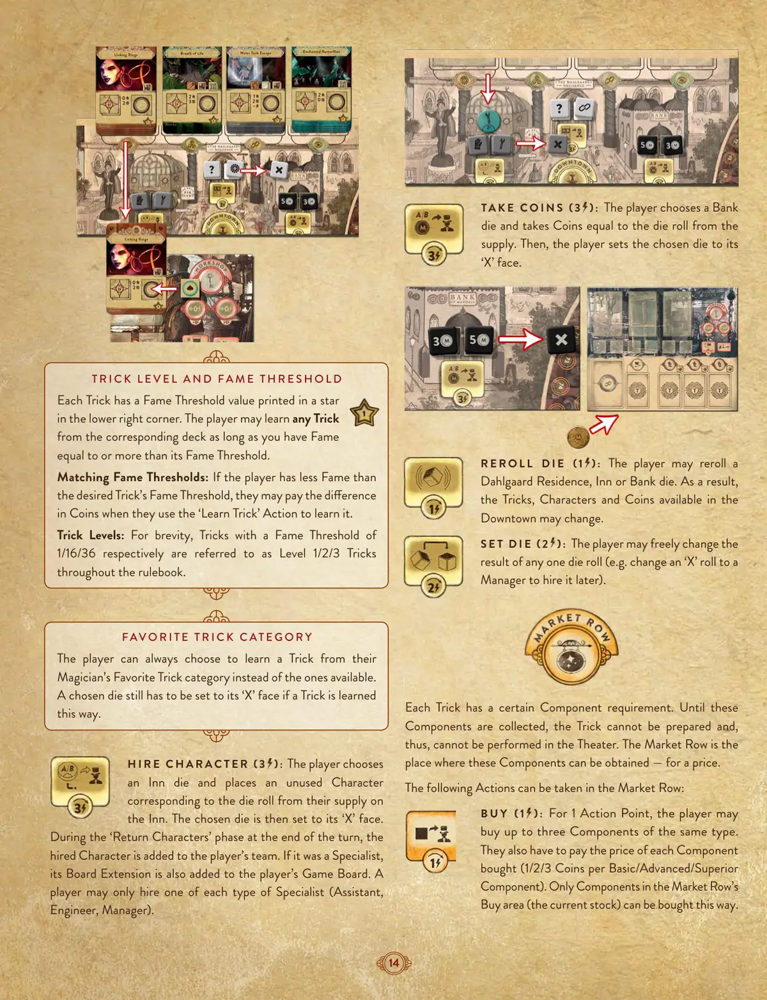
<figcaption>原版规则书 · 第 14 页（点击图片放大）</figcaption>
</figure>

<details class="mt-fold">
<summary>📝 第 14 页 AI 机翻对照（点击展开）</summary>
<div class="mt-body"><h2>技巧等级与声望门槛</h2>

<p>每个技巧在右下角以星号形式印有声望门槛值。只要玩家的声望大于或等于该技巧的声望门槛，就可以从相应的牌库中学习该技巧。</p>

<p>匹配声望门槛：如果玩家的声望低于目标技巧的声望门槛，他们可以在使用"学习技巧"行动学习该技巧时，支付差额的硬币。</p>

<p>技巧等级：为简洁起见，声望门槛分别为1/16/36的技巧在整本规则书中分别被称为1级/2级/3级技巧。</p>

<h2>最喜爱技巧类别</h2>

<p>玩家总是可以选择从自己的魔术师最喜爱技巧类别中学习技巧，而不是从可用的技巧中选择。如果以这种方式学习技巧，选中的骰子仍需设置为"X"面。</p>

<h2>雇佣角色 (3)：玩家选择一个酒馆骰子，并从自己的供应区中根据骰子点数放置一个未使用的对应角色到酒馆上。然后，选中的骰子被设置为"X"面。在回合结束时的"归还角色"阶段，被雇佣的角色被添加到玩家的团队中。如果是专家，其版图扩展也会被添加到玩家的游戏版图上。玩家每种类型的专家（助理、工程师、经理）只能雇佣一个。</h2>

<h2>获取硬币 (3)：玩家选择一个银行骰子，并从供应区中获取等于骰子点数的硬币。然后，玩家将选中的骰子设置为"X"面。</h2>

<h2>重新掷骰 (1)：玩家可以重新掷一个达加德住所、酒馆或银行骰子。结果，市中心可用的技巧、角色和硬币可能会改变。</h2>

<h2>设置骰子 (2)：玩家可以自由改变任意一个骰子点数的结果（例如，将"X"点数改为经理，以便稍后雇佣它）。</h2>

<p>每个技巧都有特定的组件需求。在收集这些组件之前，技巧无法准备，因此无法在剧院中表演。市场行是获取这些组件的地方——但需要付费。</p>

<p>以下行动可以在市场行中执行：</p>

<h2>购买 (1)：花费1个行动点，玩家可以购买最多三个相同类型的组件。他们还必须支付每个组件的价格（基础/高级/卓越组件分别为1/2/3枚硬币）。只有市场行的购买区域（当前库存）中的组件可以以此方式购买。</h2></div>
</details>

<figure>
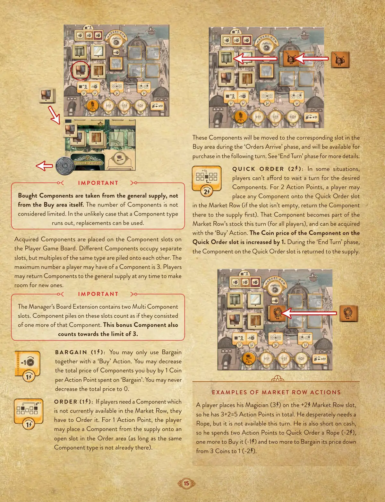
<figcaption>原版规则书 · 第 15 页（点击图片放大）</figcaption>
</figure>

<details class="mt-fold">
<summary>📝 第 15 页 AI 机翻对照（点击展开）</summary>
<div class="mt-body"><h2>重 要</h2>

<p>购买的组件从通用供应区获取，而不是从购买区本身。组件的数量不被视为有限的。在极不可能的情况下，如果某种组件类型用完，可以使用替代品。</p>

<p>获得的组件被放置在玩家游戏板的组件槽上。不同的组件占据不同的槽，但相同类型的多个组件会堆叠在一起。玩家拥有的某种组件的最大数量为3。玩家可以随时将组件返回通用供应区，以便腾出空间给新的组件。</p>

<h2>重 要</h2>

<p>经理板扩展包含两个多组件槽。这些槽上的组件堆叠被视为比实际多一个该组件。这个额外组件也计入3的限制。</p>

<h2>交易 (1)：你只能将交易与"购买"行动一起使用。你可以将你购买的组件的总价格减少1枚硬币，每花费1个行动点在"交易"上。你绝不能将总价格减少到0。</h2>

<p>订购 (1)：如果玩家需要当前市场行中没有的组件，他们必须订购它。花费1个行动点，玩家可以将供应区的一个组件放置到订购区的空槽上（前提是该组件类型尚未存在）。</p>

<p>这些组件将在"订单到达"阶段被移动到购买区中相应的槽，并在下一回合可供购买。更多细节请参见"结束回合"阶段。</p>

<h2>快速订购 (2)：在某些情况下，玩家无法等待一个回合来获取所需的组件。花费2个行动点，玩家可以将任何组件放置到市场行的快速订购槽上（如果该槽不为空，先将该槽上的组件返回供应区）。该组件成为本回合市场行库存的一部分（对所有玩家），并且可以通过"购买"行动获取。快速订购槽上组件的硬币价格增加1。在"结束回合"阶段，快速订购槽上的组件被返回供应区。</h2>

<h2>市场行行动示例</h2>

<p>一名玩家将他的魔术师(3)放置在+2市场行槽上，因此他总共有3+2=5个行动点。他急需一根绳子，但本回合没有可用。他也现金不足，因此他花费两个行动点快速订购一根绳子(-2)，再花一个行动点购买它(-1)，再花两个行动点将其价格从3枚硬币砍到1(-2)。</p></div>
</details>

<figure>
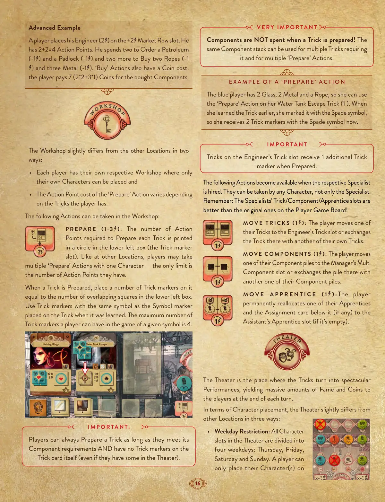
<figcaption>原版规则书 · 第 16 页（点击图片放大）</figcaption>
</figure>

<details class="mt-fold">
<summary>📝 第 16 页 AI 机翻对照（点击展开）</summary>
<div class="mt-body"><p>高级示例</p>

<p>一名玩家将他的工程师(2 )放置在+2市场行槽位。他有2+2=4行动点。他花费两个点来订购一个石油(-1 )和一个挂锁(-1 )，再花费两个点来购买两根绳子(-1 )和三块金属(-1 )。"购买"行动还有硬币成本：玩家为购买的组件支付7(2<em>2+3</em>1)枚硬币。</p>

<p>工坊与其他地点在两个方面略有不同：</p>

<p>• 每个玩家都有自己的专属工坊，只有他们自己的角色才能被放置在那里</p>

<p>• "准备"行动的行动点成本取决于玩家拥有的墩</p>

<p>可以在工坊执行以下行动：</p>

<h2>准备(1-3)：准备每个墩所需的行动点数量印在左下角方框（墩标记槽）中。与其他地点一样，玩家可以用一个角色执行多次"准备"行动——唯一的限制是他们拥有的行动点数量。</h2>

<p>当一个墩被准备时，在其上放置与左下角重叠方框数量相等的墩标记。使用与墩在学习时放置的符号标记相同符号的墩标记。玩家在游戏中对给定符号拥有的墩标记最多为4个。</p>

<h2>重要：</h2>

<p>只要玩家满足组件要求且墩卡本身没有墩标记（即使他们在剧院中有一些），他们就可以随时准备一个墩。</p>

<h2>非常重要</h2>

<p>组件在准备墩时不会被消耗！相同的组件堆可以用于需要它的多个墩和多次"准备"行动。</p>

<h2>"准备"行动示例</h2>

<p>蓝色玩家有2块玻璃、2块金属和一根绳子，因此她可以在她的水箱逃脱墩(1 )上使用"准备"行动。当她 earlier 学习这个墩时，她用铲子符号标记了它，所以现在她获得2个带有铲子符号的墩标记。</p>

<h2>重要</h2>

<p>工程师墩槽中的墩在准备时会获得1个额外的墩标记。</p>

<p>当相应的专家被雇佣时，以下行动将变得可用。它们可以由任何角色执行，而不仅仅是专家。记住：专家的墩/组件/学徒槽比玩家游戏板上的原始槽更好！</p>

<h2>移动墩(1)：玩家将他们的一个墩移动到工程师的墩槽，或将那里的墩与他们自己的另一个墩交换。</h2>

<p>移动组件(1)：玩家将他们的一个组件堆移动到经理的多组件槽，或将那里的堆与他们自己的另一个组件堆交换。</p>

<h2>移动学徒(1)：玩家永久重新分配他们的一个学徒</h2>

<p>将下方的任务卡（如果有）放到助手的学徒槽位（如果它是空的）。</p>

<p>剧院是将墩转变为精彩演出的地方，在每个回合结束时为玩家带来大量的声望和金币。</p>

<p>在角色放置方面，剧院与其他地点有三个不同之处：</p>

<p>• 工作日限制：剧院中的所有角色槽位分为四个工作日：周四、周五、周六和周日。玩家只能将他们的角色放置在</p></div>
</details>

<figure>
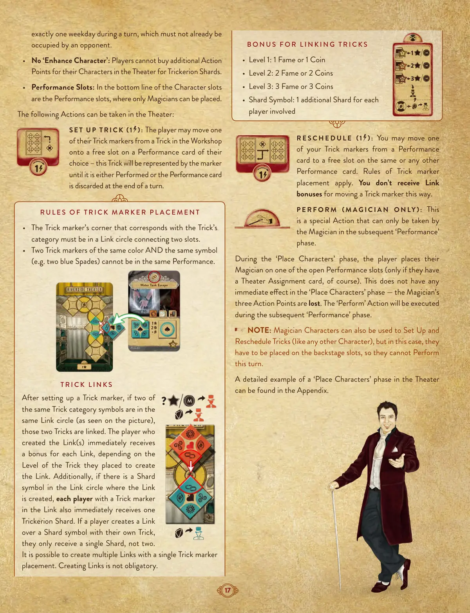
<figcaption>原版规则书 · 第 17 页（点击图片放大）</figcaption>
</figure>

<details class="mt-fold">
<summary>📝 第 17 页 AI 机翻对照（点击展开）</summary>
<div class="mt-body"><p>在一个回合内，恰好选择一个工作日，且该工作日不能已被对手占据。</p>

<p>•	 无"增强角色"：玩家不能为他们在剧院中的角色购买额外的行动点，使用的是特里克里安碎片。</p>

<p>•	 表演槽位：在角色槽位的底行是表演槽位，只有魔术师可以放置在此处。</p>

<p>玩家可以在剧院中执行以下行动：</p>

<p>设置技巧(1)：玩家可以将他们的一个技巧标记从工作坊中的一个技巧移动到他们选择的表演卡上的一个空闲槽位——这个技巧将由该标记代表，直到它被表演或该表演卡在回合结束时被弃置。</p>

<h2>技巧标记放置规则</h2>

<p>•	 技巧标记的对应技巧类别的角必须位于连接两个槽位的连接圆圈中。</p>

<p>•	 相同颜色和相同符号的两个技巧标记（例如两个黑桃）不能在同一表演中。</p>

<h2>技巧连接</h2>

<p>设置技巧标记后，如果两个相同技巧类别符号位于同一个连接圆圈中（如图所示），则这两个技巧被连接。创建连接的玩家立即为每个连接获得奖励，奖励取决于他们放置以创建连接的技巧的等级。此外，如果在创建连接的连接圆圈中有碎片符号，每个在该连接中有技巧标记的玩家也立即获得一个特里克里安碎片。如果玩家用自己的技巧在碎片符号上创建连接，他们只获得一个碎片，而不是两个。</p>

<p>通过放置一个技巧标记可以创建多个连接。创建连接不是强制性的。</p>

<h2>连接技巧的奖励</h2>

<p>•	 1级：1名望或1枚硬币</p>

<p>•	 2级：2名望或2枚硬币</p>

<p>•	 3级：3名望或3枚硬币</p>

<p>•	 碎片符号：每位参与的玩家额外获得1个碎片</p>

<p>重新安排(1)：你可以将你的一个技巧标记从表演卡移动到同一张或任何其他表演卡上的一个空闲槽位。技巧标记放置规则适用。通过这种方式移动技巧标记不会获得连接奖励。</p>

<p>表演（仅限魔术师）：这是一个特殊行动，只能在随后的"表演"阶段由魔术师执行。</p>

<p>在"放置角色"阶段，玩家将他们的魔术师放置在一个开放的表演槽位上（当然，前提是他们有剧院任务卡）。这在"放置角色"阶段不会产生任何即时效果——魔术师的三个行动点将丢失。"表演"行动将在随后的"表演"阶段执行。</p>

<p>注意：魔术师角色也可以用于设置和</p>

<p>重新安排墩（如同其他角色），但在这种情况下，它们必须放置在后台格位，因此本回合它们无法表演。</p>

<p>剧院中"放置角色"阶段的详细示例可在附录中找到。</p></div>
</details>

<figure>
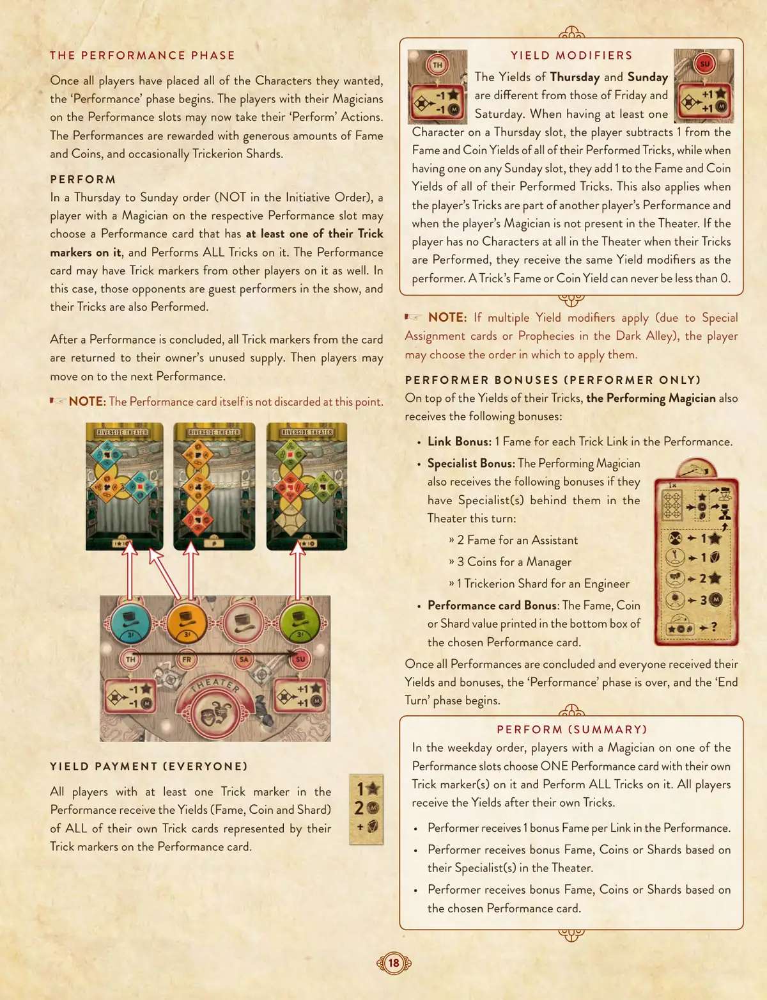
<figcaption>原版规则书 · 第 18 页（点击图片放大）</figcaption>
</figure>

<details class="mt-fold">
<summary>📝 第 18 页 AI 机翻对照（点击展开）</summary>
<div class="mt-body"><h2>表演阶段</h2>

<p>当所有玩家放置完他们想要的所有角色后，"表演"阶段开始。将魔术师放置在表演格上的玩家现在可以执行他们的"表演"行动。</p>

<p>表演会获得大量的声望和金币，偶尔还有特里克里安碎片。</p>

<h2>表演</h2>

<p>按照周四到周日的顺序（不是按照行动顺序），将魔术师放在相应表演格上的玩家可以选择一张至少有一个他们的技巧标记的表演卡，并表演该卡上的所有技巧。表演卡上也可能有其他玩家的技巧标记。在这种情况下，这些对手是表演中的客座表演者，他们的技巧也会被表演。</p>

<p>当一个表演结束后，卡上的所有技巧标记都会返还给它们的主人，进入未使用状态。然后玩家可以继续进行下一个表演。</p>

<p>注意：表演卡此时不会被弃置。</p>

<h2>收益支付（所有人）</h2>

<p>在表演中至少有一个技巧标记的所有玩家，会获得他们自己的所有技巧卡所代表的收益（声望、金币和碎片），这些技巧卡上的技巧标记位于表演卡上。</p>

<h2>收益修正</h2>

<p>周四和周日收益与周五和周六的收益不同。当在周四格上至少有一个角色时，玩家从他们表演的所有技巧的声望和金币收益中减去1，而当在任意周日格上有一个角色时，他们为表演的所有技巧的声望和金币收益加1。当玩家的技巧是其他玩家表演的一部分，以及当玩家的魔术师不在剧院时，这也适用。当玩家的技巧被表演时，如果他们在剧院中没有任何角色，他们会获得与表演者相同的收益修正。一个技巧的声望或金币收益永远不会低于0。</p>

<p>注意：如果多个收益修正适用（由于暗巷中的特殊分配卡或预言），玩家可以选择应用它们的顺序。</p>

<h2>表演者奖励（仅表演者）</h2>

<p>除了他们技巧的收益外，表演的魔术师还会获得以下奖励：</p>

<p>• 连接奖励：表演中的每个技巧连接获得1点声望。</p>

<p>• 专家奖励：如果本回合在剧院中他们身后有专家，表演的魔术师还会获得以下奖励：</p>

<p>» 助手：2点声望</p>

<p>» 经理：3个金币</p>

<p>» 工程师：1个特里克里安碎片</p>

<p>• 表演卡奖励：所选表演卡底部框中印制的声望、金币或碎片数值。</p>

<p>当所有表演结束，每个人都收到他们的</p>

<p>产出和奖励，"表演"阶段结束，"结束回合"阶段开始。</p>

<h2>表演（总结）</h2>

<p>按工作日顺序，在表演槽位上有魔术师的玩家选择一张带有自己技巧标记的表演卡牌，并执行该卡牌上的所有技巧。所有玩家在执行自己的技巧后获得产出。</p>

<p>• 表演者根据表演中的链接数量获得1点额外声望。</p>

<p>• 表演者根据他们在剧院中的专家获得额外声望、金币或碎片。</p>

<p>• 表演者根据所选的表演卡牌获得额外声望、金币或碎片。</p></div>
</details>

<figure>
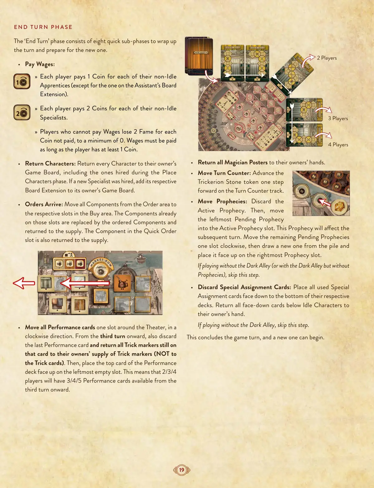
<figcaption>原版规则书 · 第 19 页（点击图片放大）</figcaption>
</figure>

<details class="mt-fold">
<summary>📝 第 19 页 AI 机翻对照（点击展开）</summary>
<div class="mt-body"><p>2 玩家</p>

<p>3 玩家</p>

<p>4 玩家</p>

<h2>回合结束阶段</h2>

<p>"回合结束"阶段包含八个快速子阶段，用于结束当前回合并为新回合做准备。</p>

<p>• 支付工资：</p>

<p>»» 每位玩家为其每个非闲置的学徒支付 1 个金币（位于助手板块扩展上的那个除外）。</p>

<p>»» 每位玩家为其每个非闲置的专家支付 2 个金币。</p>

<p>»» 无法支付工资的玩家，每个未支付的金币将失去 2 名望，最低为 0。只要玩家至少有 1 个金币，就必须支付工资。</p>

<p>• 归还角色：将每个角色归还给其拥有者的游戏版图，包括在放置角色阶段雇佣的角色。如果雇佣了新的专家，将其相应的板块扩展添加到其拥有者的游戏版图上。</p>

<p>• 订单到达：将订单区域的所有组件移动到购买区域相应的槽位。这些槽位上已有的组件被订购的组件替换并返回到供应库。快速订单槽中的组件也返回到供应库。</p>

<p>• 将所有表演卡牌顺时针方向在剧院移动一个槽位。从第三回合开始，还要弃掉最后一张表演卡牌，并将仍在该卡牌上的所有戏法指示物归还给其拥有者的戏法指示物供应库（不是戏法卡牌）。然后，将表演牌库顶部的牌面朝上放在最左边的空槽位上。这意味着从第三回合开始，2/3/4 名玩家将分别有 3/4/5 张可用的表演卡牌。</p>

<p>• 将所有魔术海报归还给其拥有者的手牌。</p>

<p>• 移动回合计数器：将特里克里安石指示物在回合计数器轨道上向前移动一步。</p>

<p>• 移动预言：弃掉当前激活的预言。然后将最左边的待处理预言移动到激活预言槽位。这个预言将影响后续回合。将剩余的待处理预言顺时针移动一个槽位，然后从牌堆中抽取一张新预言，面朝上放在最右边的预言槽位。</p>

<p>如果不玩黑暗小巷（或玩黑暗小巷但不使用预言），则跳过此步骤。</p>

<p>• 弃掉特殊任务卡：将所有使用过的特殊任务卡面朝下放到各自牌库的底部。将闲置角色下方的所有面朝下的卡牌归还给其拥有者的手牌。</p>

<p>如果不玩黑暗小巷，则跳过此步骤。</p>

<p>这结束了游戏回合，可以开始新回合。</p></div>
</details>

<figure>
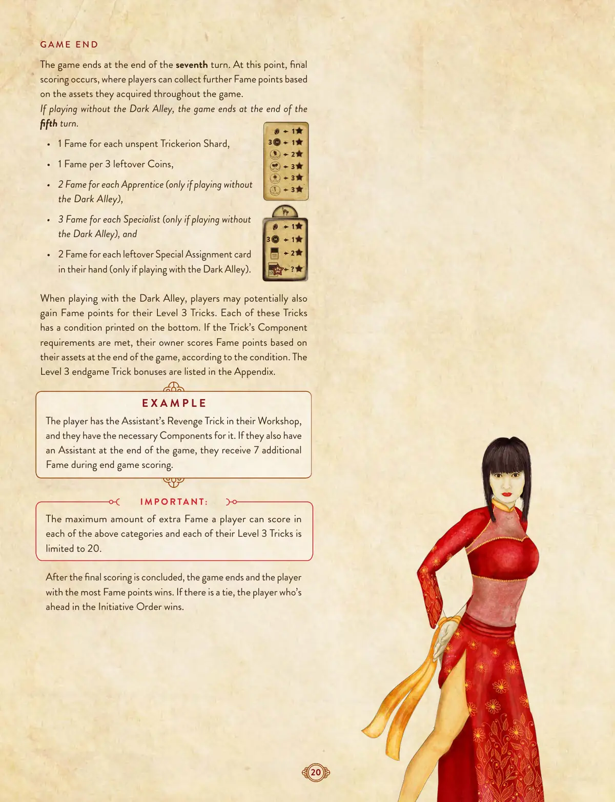
<figcaption>原版规则书 · 第 20 页（点击图片放大）</figcaption>
</figure>

<details class="mt-fold">
<summary>📝 第 20 页 AI 机翻对照（点击展开）</summary>
<div class="mt-body"><h2>游戏结束</h2>

<p>游戏在第七个回合结束时结束。此时进行最终计分，玩家可以根据他们在整个游戏中获得的资产收集额外的声望点数。</p>

<p>如果不使用暗巷扩展，游戏在第五个回合结束时结束。</p>

<p>• 每个未使用的Trickerion碎片获得1点声望，</p>

<p>• 每3枚剩余的硬币获得1点声望，</p>

<p>• 每个学徒获得2点声望（仅在不使用暗巷扩展时），</p>

<p>• 每个专家获得3点声望（仅在不使用暗巷扩展时），以及</p>

<p>• 手中每张剩余的特殊任务卡获得2点声望（仅在使用暗巷扩展时）。</p>

<p>当使用暗巷扩展时，玩家还可能因其三级戏法获得声望点数。每个戏法底部都印有一个条件。如果戏法的组件要求得到满足，其所有者将根据游戏结束时的资产，按照该条件获得声望点数。三级终局戏法奖励列在附录中。</p>

<h2>示例</h2>

<p>玩家的工作坊中有助理复仇戏法，并且拥有所需的组件。如果他们在游戏结束时也拥有一个助理，他们在终局计分中将获得额外的7点声望。</p>

<h2>重要提示：</h2>

<p>玩家在上述每个类别及其每个三级戏法中可以获得的额外声望上限为20点。</p>

<p>最终计分结束后，游戏结束，声望点数最多的玩家获胜。如果平局，则先行动顺序领先的玩家获胜。</p></div>
</details>

<figure>
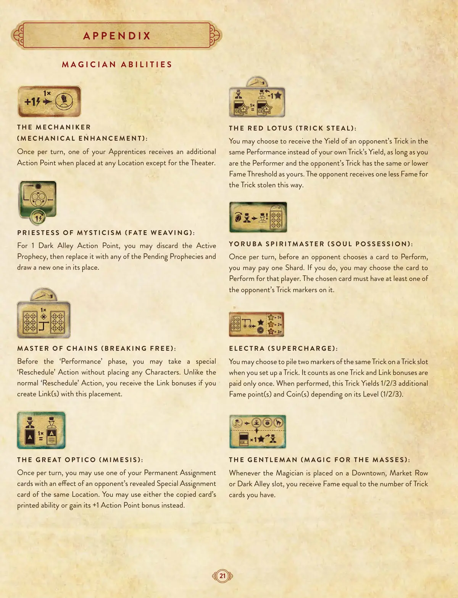
<figcaption>原版规则书 · 第 21 页（点击图片放大）</figcaption>
</figure>

<details class="mt-fold">
<summary>📝 第 21 页 AI 机翻对照（点击展开）</summary>
<div class="mt-body"><h2>附 录</h2>

<h2>魔术师能力</h2>

<h2>机 巧 师</h2>

<p>（机械增强）：</p>

<p>每回合一次，你的学徒在除剧院外的任何位置放置时，会获得一个额外的行动点。</p>

<h2>神秘主义女祭司（命运编织）：</h2>

<p>花费1个暗巷行动点，你可以弃掉当前生效的预言，然后用任何待定预言替换它，并抽一张新预言牌。</p>

<h2>锁链大师（挣脱束缚）：</h2>

<p>在"表演"阶段前，你可以执行一次特殊的"重排"行动而不放置任何角色。与普通的"重排"行动不同，如果你通过这次放置创建了连接，你将获得连接奖励。</p>

<h2>伟大的光学师（模仿）：</h2>

<p>每回合一次，你可以使用你的一张永久分配卡，其效果与对手在同一位置揭示的特殊分配卡的效果相同。你可以使用被复制卡牌的印刷能力，或者获得其+1行动点奖励。</p>

<h2>红莲（诡计窃取）：</h2>

<p>只要你是表演者且对手的诡计的声望阈值等于或低于你的诡计，你可以选择在同一表演中获得对手的诡计收益，而不是你自己诡计的收益。对手因此被窃取的诡计将少获得一点声望。</p>

<h2>约鲁巴灵术师（灵魂附体）：</h2>

<p>每回合一次，在对手选择要表演的卡牌前，你可以支付一个碎片。如果你这样做，你可以为该玩家选择要表演的卡牌。所选卡牌上必须至少有一个对手的诡计标记。</p>

<h2>埃莱克特拉（超级充能）：</h2>

<p>当你设置一个诡计时，你可以选择将两个相同的诡计标记堆放在一个诡计槽位上。它算作一个诡计，连接奖励只支付一次。当表演时，这个诡计根据其等级（1/2/3）额外获得1/2/3点声望和金币。</p>

<h2>绅士（大众魔法）：</h2>

<p>每当魔术师被放置在市中心、市场行或暗巷的槽位上时，你获得的声望等于你拥有的诡计卡牌数量。</p></div>
</details>

<figure>
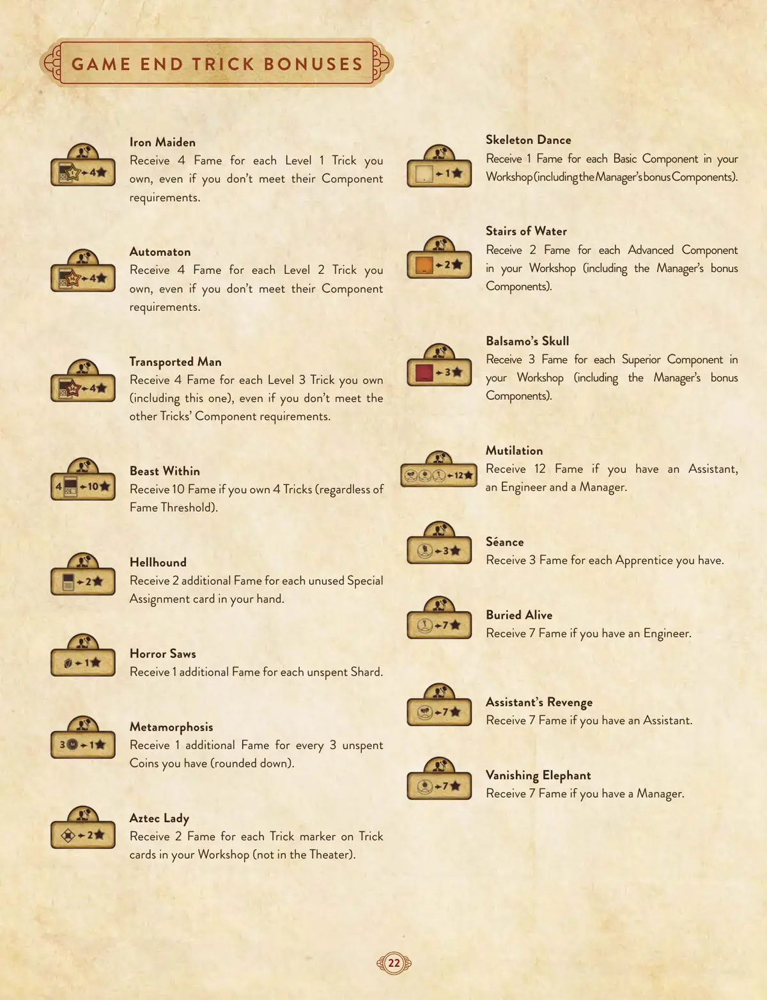
<figcaption>原版规则书 · 第 22 页（点击图片放大）</figcaption>
</figure>

<details class="mt-fold">
<summary>📝 第 22 页 AI 机翻对照（点击展开）</summary>
<div class="mt-body"><h2>游戏结束技巧奖励</h2>

<p>Iron Maiden（铁娘子）</p>

<p>拥有每个1级技巧获得4声望，即使你不满足它们的组件要求。</p>

<p>Automaton（自动机）</p>

<p>拥有每个2级技巧获得4声望，即使你不满足它们的组件要求。</p>

<p>Transported Man（被传送的人）</p>

<p>拥有每个3级技巧（包括这个）获得4声望，即使你不满足其他技巧的组件要求。</p>

<p>Beast Within（内在野兽）</p>

<p>拥有4个技巧时获得10声望（无论声望阈值）。</p>

<p>Hellhound（地狱犬）</p>

<p>手牌中每张未使用的特殊分配卡获得2额外声望。</p>

<p>Horror Saws（恐怖锯子）</p>

<p>每个未花费的碎片获得1额外声望。</p>

<p>Metamorphosis（变形）</p>

<p>每3个未花费的硬币获得1额外声望（向下取整）。</p>

<p>Aztec Lady（阿兹特克女士）</p>

<p>你工坊中技巧卡上的每个技巧标记获得2声望（剧院中的不算）。</p>

<p>Skeleton Dance（骷髅舞）</p>

<p>你工坊中的每个基础组件获得1声望（包括经理的奖励组件）。</p>

<p>Stairs of Water（水之阶梯）</p>

<p>你工坊中的每个高级组件获得2声望（包括经理的奖励组件）。</p>

<p>Balsamo's Skull（巴尔萨莫的头骨）</p>

<p>你工坊中的每个高级组件获得3声望（包括经理的奖励组件）。</p>

<p>Mutilation（残害）</p>

<p>拥有助理、工程师和经理时获得12声望。</p>

<p>Séance（降神会）</p>

<p>每个学徒获得3声望。</p>

<p>Buried Alive（活埋）</p>

<p>拥有工程师时获得7声望。</p>

<p>Assistant's Revenge（助理的复仇）</p>

<p>拥有助理时获得7声望。</p>

<p>Vanishing Elephant（消失的大象）</p>

<p>拥有经理时获得7声望。</p></div>
</details>

<figure>
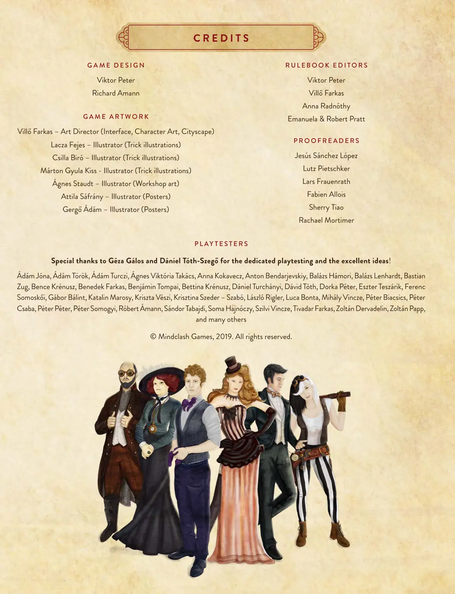
<figcaption>原版规则书 · 第 23 页（点击图片放大）</figcaption>
</figure>

<details class="mt-fold">
<summary>📝 第 23 页 AI 机翻对照（点击展开）</summary>
<div class="mt-body"><h2>游戏设计</h2>

<p>Viktor Peter</p>

<p>Richard Amann</p>

<h2>游戏美术</h2>

<p>Villő Farkas – 艺术总监（界面、角色艺术、城市景观）</p>

<p>Lacza Fejes – 插画师（墩插图）</p>

<p>Csilla Biró – 插画师（墩插图）</p>

<p>Márton Gyula Kiss - 插画师（墩插图）</p>

<p>Ágnes Staudt – 插画师（工坊艺术）</p>

<p>Attila Sáfrány – 插画师（海报）</p>

<p>Gergő Ádám – 插画师（海报）</p>

<h2>规则书编辑</h2>

<p>Viktor Peter</p>

<p>Villő Farkas</p>

<p>Anna Radnóthy</p>

<p>Emanuela &amp; Robert Pratt</p>

<h2>校对</h2>

<p>Jesús Sánchez López</p>

<p>Lutz Pietschker</p>

<p>Lars Frauenrath</p>

<p>Fabien Allois</p>

<p>Sherry Tiao</p>

<p>Rachael Mortimer</p>

<h2>致谢</h2>

<h2>游戏测试者</h2>

<p>特别感谢 Géza Gálos 和 Dániel Tóth-Szegő 专注的测试和出色的想法！</p>

<p>Ádám Jóna, Ádám Török, Ádám Turczi, Ágnes Viktória Takács, Anna Kokavecz, Anton Bendarjevskiy, Balázs Hámori, Balázs Lenhardt, Bastian Zug, Bence Krénusz, Benedek Farkas, Benjámin Tompai, Bettina Krénusz, Dániel Turchányi, Dávid Tóth, Dorka Péter, Eszter Teszárik, Ferenc Somoskői, Gábor Bálint, Katalin Marosy, Kriszta Vészi, Krisztina Szeder – Szabó, László Rigler, Luca Bonta, Mihály Vincze, Péter Biacsics, Péter Csaba, Péter Péter, Péter Somogyi, Róbert Ámann, Sándor Tabajdi, Soma Hajnóczy, Szilvi Vincze, Tivadar Farkas, Zoltán Dervadelin, Zoltán Papp, 以及许多人</p>

<p>© Mindclash Games, 2019. 保留所有权利。</p></div>
</details>

<figure>
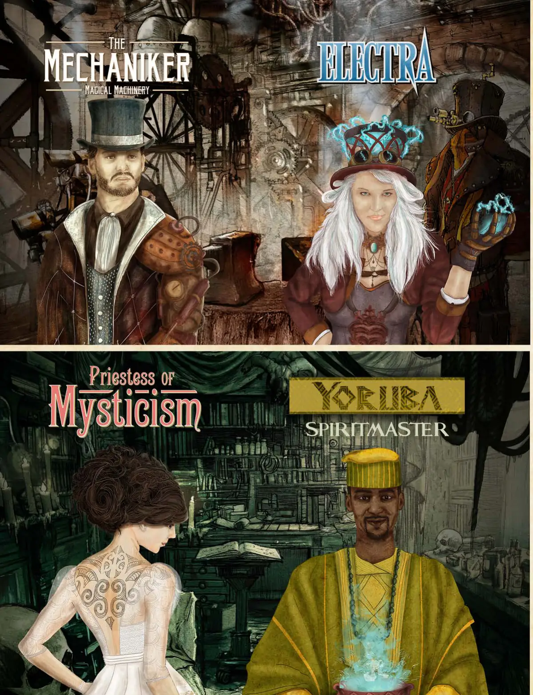
<figcaption>原版规则书 · 第 24 页（点击图片放大）</figcaption>
</figure>


<figure>
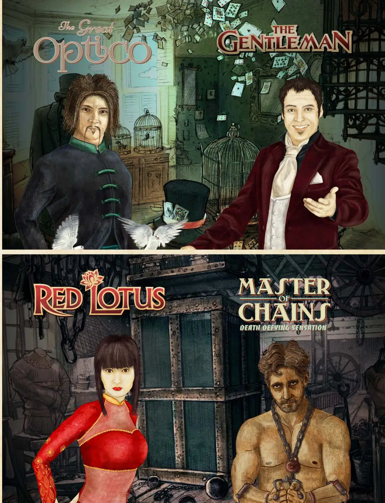
<figcaption>原版规则书 · 第 25 页（点击图片放大）</figcaption>
</figure>


<figure>
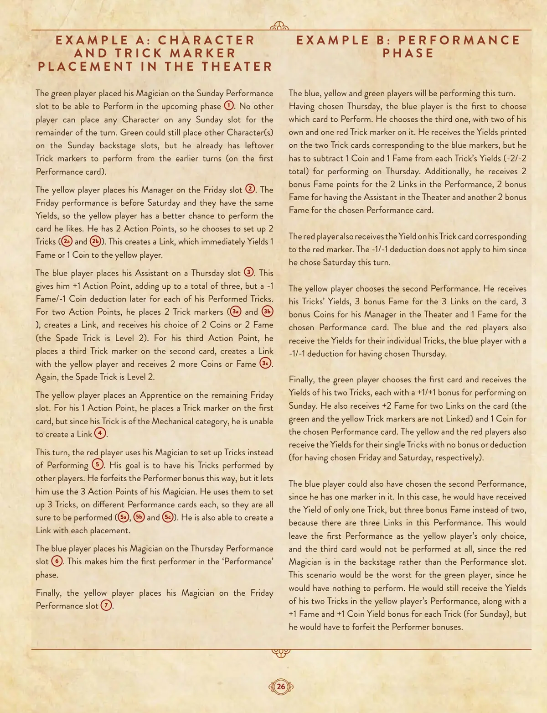
<figcaption>原版规则书 · 第 26 页（点击图片放大）</figcaption>
</figure>

<details class="mt-fold">
<summary>📝 第 26 页 AI 机翻对照（点击展开）</summary>
<div class="mt-body"><h2>示例 B：表演阶段</h2>

<p>蓝色、黄色和绿色玩家将进行本回合的表演。</p>

<p>在选择了星期四后，蓝色玩家首先选择要表演的卡牌。他选择了第三张卡牌，上面有两个他自己的标记和一个红色墩标记。他获得了与蓝色标记相对应的两张墩卡上印制的产出，但由于他在星期四表演，必须从每张墩的产出中减去1枚硬币和1点声望（总共-2/-2）。此外，他还因表演中的2个链接获得2点额外声望，因剧院中的助理获得2点额外声望，以及因所选的表演卡牌获得2点额外声望。</p>

<p>红色玩家也获得了与他红色标记相对应的墩卡上的产出。由于他本回合选择了星期六，-1/-1的扣除不适用于他。</p>

<p>黄色玩家选择了第二个表演。他获得了他的墩卡的产出，卡牌上3个链接获得3点额外声望，剧院中的经理获得3枚额外硬币，以及所选的表演卡牌获得1点声望。蓝色和红色玩家也获得了他们各自墩卡的产出，蓝色玩家因选择了星期四而有-1/-1的扣除。</p>

<p>最后，绿色玩家选择了第一张卡牌，并获得他两个墩卡的产出，每个墩因在星期日表演而有+1/+1的奖励。他还因卡牌上的2个链接获得+2点声望（绿色和黄色墩标记不链接），以及因所选的表演卡牌获得1枚硬币。黄色和红色玩家也获得了他们各自单个墩卡的产出，没有奖励或扣除（分别因选择了星期五和星期六）。</p>

<p>蓝色玩家也可以选择第二个表演，因为他在那里有一个标记。在这种情况下，他将只获得一个墩的产出，但有3点额外声望而不是2点，因为这次表演中有3个链接。这将使第一个表演成为黄色玩家的唯一选择，而第三张卡牌将完全不会被表演，因为红色魔术师在后台而不是表演槽位。</p>

<p>这种情况对绿色玩家来说是最糟糕的，因为他将没有任何表演可进行。他仍然会在黄色玩家的表演中获得他两个墩的产出，每个墩因星期日而有+1点声望和+1枚硬币的产出奖励，但他必须放弃表演者奖励。</p>

<h2>示例 A：角色和墩标记在剧院中的放置</h2>

<p>绿色玩家将他的魔术师放置在星期日的表演槽位，以便能够在即将到来的阶段1进行表演。在本回合剩余时间内，没有其他玩家可以在任何星期日槽位放置任何角色。绿色仍然可以放置其他角色(</p>

<p>在周日的后台时段，但他已经有余下的</p>

<p>墩标记要表演（来自较早的回合，在第一张</p>

<p>表演卡上）。</p>

<p>黄色玩家将他的经理放在周五时段2。周五表演在周六之前，且它们有相同的</p>

<p>收益，所以黄色玩家有更好的机会表演他喜欢的卡牌。他有2个行动点，因此他选择设置2个</p>

<p>墩（2a和2b）。这创造了一个连接，立即为黄色玩家带来1</p>

<p>名气或1金币。</p>

<p>蓝色玩家将他的助手放在周四时段3。这使他获得+1行动点，总计达到三个，但之后每个他表演的墩都会扣除-1</p>

<p>名气/-1金币。他用两个行动点放置了2个墩标记（3a和3b），创造了一个连接，并获得了2金币或2名气的选择（黑桃墩是2级）。对于他的第三个行动点，他在第二张卡上放置了第三个墩标记，与黄色玩家创造了连接，并获得2更多的金币或名气3c。同样，黑桃墩是2级。</p>

<p>黄色玩家将他的学徒放在剩余的周五时段。他用1个行动点，在第一张卡上放置了一个墩标记，但由于他的墩属于机械类别，他无法创造连接4。</p>

<p>这个回合，红色玩家使用他的魔术师来设置墩而不是表演5。他的目标是让其他玩家表演他的墩。他以此放弃了表演者奖励，但这让他可以使用他魔术师的3个行动点。他用它们在不同的表演卡上各设置3个墩，所以它们都肯定会被表演（5a、5b和5c）。他也能够在每次放置时创造连接。</p>

<p>蓝色玩家将他的魔术师放在周四表演时段6。这使他成为"表演"阶段的第一个表演者。</p>

<p>最后，黄色玩家将他的魔术师放在周五表演时段7。</p></div>
</details>

<figure>
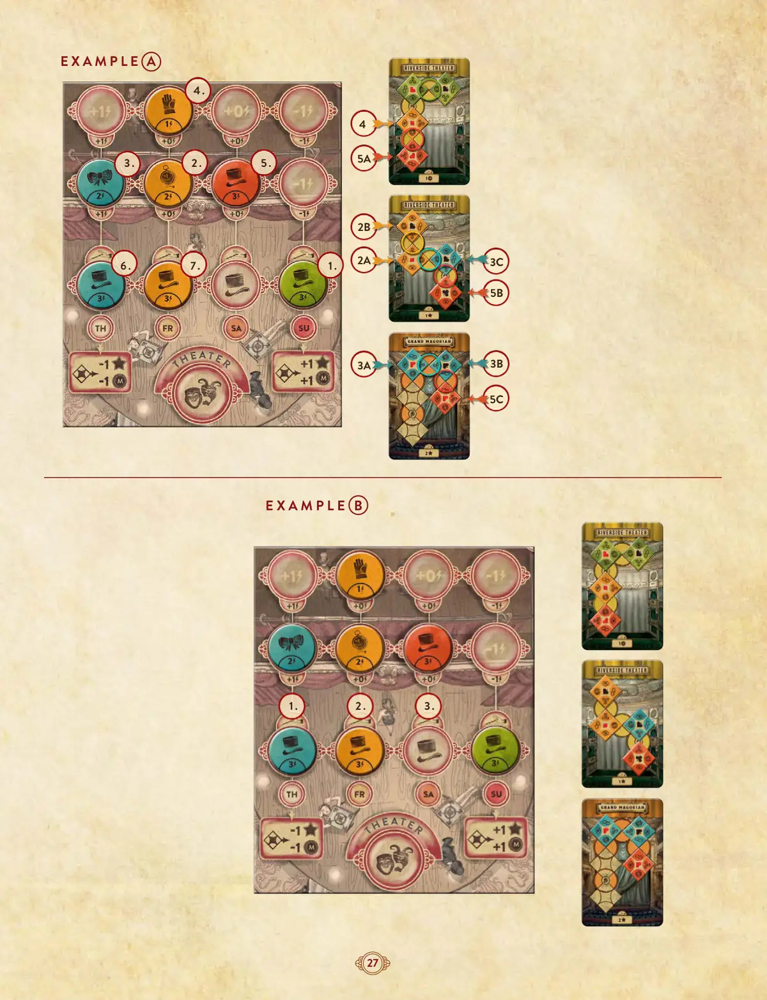
<figcaption>原版规则书 · 第 27 页（点击图片放大）</figcaption>
</figure>

<details class="mt-fold">
<summary>📝 第 27 页 AI 机翻对照（点击展开）</summary>
<div class="mt-body"><h2>示例 A</h2>

<h2>示例 B</h2>

<p>1.</p>

<p>1 .</p>

<p>6 .</p>

<p>7.</p>

<p>5A</p>

<p>2B</p>

<p>3C</p>

<p>5B</p>

<p>3B</p>

<p>5C</p>

<p>2A</p>

<p>3A</p>

<p>2.</p>

<p>2 .</p>

<p>3 .</p>

<p>3 .</p>

<p>5 .</p>

<p>4.</p></div>
</details>

<figure>
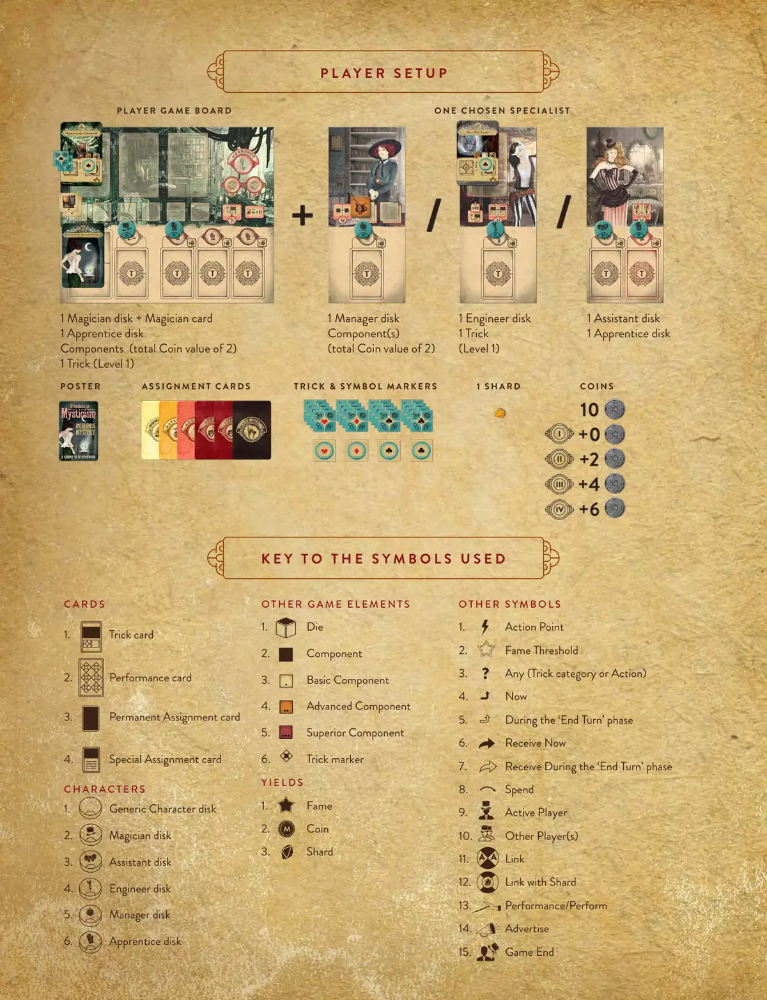
<figcaption>原版规则书 · 第 28 页（点击图片放大）</figcaption>
</figure>

<details class="mt-fold">
<summary>📝 第 28 页 AI 机翻对照（点击展开）</summary>
<div class="mt-body"><h2>玩家游戏版图</h2>

<h2>任务卡</h2>

<h2>戏法与符号标记</h2>

<h2>1 个碎片</h2>

<h2>金币</h2>

<h2>海报</h2>

<h2>1 位选定的专家</h2>

<p>?</p>

<p>1 个魔术师圆盘 + 魔术师卡牌</p>

<p>1 个学徒圆盘</p>

<p>组件 (总金币价值为 2)</p>

<p>1 个戏法 (等级 1)</p>

<p>1 个经理圆盘</p>

<p>组件</p>

<p>(总金币价值为 2)</p>

<p>1 个工程师圆盘</p>

<p>1 个戏法</p>

<p>(等级 1)</p>

<p>1 个助手圆盘</p>

<p>1 个学徒圆盘</p>

<h2>符号使用说明</h2>

<h2>玩家设置</h2>

<h2>卡牌</h2>

<p>1.</p>

<p>戏法卡牌</p>

<p>2.</p>

<p>表演卡牌</p>

<p>3.</p>

<p>永久任务卡牌</p>

<p>4.</p>

<p>特殊任务卡牌</p>

<h2>角色</h2>

<p>1.</p>

<p>通用角色圆盘</p>

<p>2.</p>

<p>魔术师圆盘</p>

<p>3.</p>

<p>助手圆盘</p>

<p>4.</p>

<p>工程师圆盘</p>

<p>5.</p>

<p>经理圆盘</p>

<p>6.</p>

<p>学徒圆盘</p>

<h2>其他游戏元素</h2>

<p>1.</p>

<p>骰子</p>

<p>2.</p>

<p>组件</p>

<p>3.</p>

<p>基础组件</p>

<p>4.</p>

<p>高级组件</p>

<p>5.</p>

<p>优质组件</p>

<p>6.</p>

<p>戏法标记</p>

<h2>产出</h2>

<p>1.</p>

<p>声望</p>

<p>2.</p>

<p>金币</p>

<p>3.</p>

<p>碎片</p>

<h2>其他符号</h2>

<p>1.</p>

<p>行动点</p>

<p>2.</p>

<p>声望阈值</p>

<p>3.</p>

<p>任意 (戏法类别或行动)</p>

<p>4.</p>

<p>立即</p>

<p>5.</p>

<p>在"结束回合"阶段期间</p>

<p>6.</p>

<p>立即获得</p>

<p>7.</p>

<p>在"结束回合"阶段期间获得</p>

<p>8.</p>

<p>花费</p>

<p>9.</p>

<p>当前玩家</p>

<p>10.</p>

<p>其他玩家</p>

<p>11.</p>

<p>连接</p>

<p>12.</p>

<p>与碎片连接</p>

<p>13.</p>

<p>表演/进行表演</p>

<p>14.</p>

<p>宣传</p>

<p>15.</p>

<p>游戏结束</p></div>
</details>
        </div>

        <footer class="source-note">
<p>来源：<a href="https://mindclashgames.com/wp-content/uploads/2023/03/Trickerion-Retail-version-Revised-Rulebook_2019-web.pdf" target="_blank" rel="noopener">Mindclash Games 官方</a>（2015 Trickerion-Retail-version-Revised-Rulebook_2019-web.pdf）· 译文仅供个人学习查阅，规则内容归 Mindclash Games 及版权方所有 · 原文版權與商标归原出版方。</p>
</footer>
      </article>
    </main>
  </div>

  <button class="to-top" aria-label="返回顶部" data-i18n-aria="backTop">↑</button>
  <script src="../assets/js/i18n.js"></script>
  <script src="../assets/js/main.js"></script>
</body>
</html>
